π-Bench: Evaluating Proactive Personal Assistant Agents in Long-Horizon Workflows
π-Bench：长程工作流中主动式个人助理评测
100 个多 session 任务、5 类人设、隐藏用户意图；Proactivity 与 Completeness 双指标揭示'执行强、主动弱'的普遍错位。
翻译范围：正文全部段落走三步精翻（直译→反思→雅化）；脚注与参考文献不译；公式、数字、模型名、数据集名、引用标记按原文 Unicode 保真；表格还原为可复制文本。
Table 1表 1 报告了所有被评测模型在五个用户领域上的总体性能。
| Model | Average | User domain | |||||
|---|---|---|---|---|---|---|---|
| PROC | COMP | Researcher | Marketer | Pharmacist | Law Trainee | Financier | |
| GPT-5.4 | 67.02.1 | 65.61.8 | 46.0 / 66.4 | 78.2 / 67.1 | 75.9 / 71.5 | 56.9 / 61.9 | 78.1 / 61.2 |
| Gemini 3.1 Pro | 57.10.9 | 60.00.8 | 41.1 / 59.2 | 65.0 / 62.1 | 71.0 / 72.1 | 50.0 / 55.3 | 58.6 / 51.1 |
| Claude Opus 4.6 | 65.51.4 | 67.61.5 | 50.3 / 74.5 | 75.0 / 74.6 | 82.8 / 68.6 | 45.7 / 57.2 | 73.8 / 63.2 |
| DeepSeek V3.2 | 53.31.9 | 57.83.0 | 29.0 / 66.9 | 69.1 / 59.4 | 75.9 / 62.6 | 33.2 / 51.1 | 59.1 / 48.9 |
| MiniMax M2.7 | 55.63.2 | 60.01.8 | 33.4 / 63.9 | 71.9 / 61.9 | 77.1 / 63.6 | 38.6 / 52.5 | 57.2 / 58.1 |
| Kimi K2.5 | 43.10.2 | 61.61.9 | 28.9 / 63.5 | 41.2 / 62.3 | 70.1 / 74.8 | 34.8 / 54.4 | 40.4 / 52.9 |
| Seed2.0 Pro | 58.40.9 | 52.13.8 | 38.9 / 59.6 | 71.4 / 44.2 | 77.0 / 67.6 | 46.0 / 44.7 | 58.7 / 44.5 |
| GLM-5.1 | 58.40.8 | 63.62.9 | 41.8 / 61.6 | 62.6 / 69.1 | 75.2 / 70.3 | 45.5 / 57.3 | 66.7 / 59.8 |
| Qwen3.6 Plus | 64.01.1 | 64.10.6 | 40.1 / 70.0 | 77.5 / 66.6 | 79.7 / 70.2 | 45.7 / 60.2 | 77.1 / 53.6 |
Table 2
| User | Task | Session | Hidden Intent | Rubric | Rule |
|---|---|---|---|---|---|
| Researcher | 20 | 20 | 84 | 125 | 31 |
| Marketer | 20 | 20 | 74 | 58 | 11 |
| Law Trainee | 20 | 20 | 89 | 131 | 43 |
| Pharmacist | 20 | 20 | 195 | 85 | 25 |
| Financier | 20 | 20 | 82 | 111 | 58 |
| Total | 100 | 100 | 524 | 510 | 168 |
Table 3
| Domain | Tool | Function |
|---|---|---|
| Amazon | Add Address | Add a saved address in Amazon |
Table 4
| Skill | Function |
|---|---|
| Jargon Translator | Converts plain language into workplace jargon and translates jargon back into |
Table 5
| Type | Task category | Description | Count |
|---|---|---|---|
| A | AI RESEARCH FRONTIER INTEL- | Tasks that track multimodal agents, think-with-image methods, OpenClaw up- | 7 |
| LIGENCE | dates, benchmark metrics, paper links, and follow-up value. They emphasize | ||
| selective reading, reproducibility signals, and research-roadmap judgment rather | |||
| than broad literature dumping. | |||
| B | SCHOLARLY EXPERIMENT AND | Tasks that convert experiment records, peer-review comments, and paper-writing | 4 |
| REBUTTAL ARTIFACTS | conventions into structured research deliverables. The common pattern is dis- | ||
| ciplined triage, table-first result synthesis, and reusable Markdown or LaTeX | |||
| outputs for academic workflows. | |||
| C | RESEARCHER LIFE AND CA- | Tasks that blend personal constraints with concrete recommendations for cam- | 4 |
| REER PLANNING | pus life, housing, fitness, diet, and research-oriented internships. They require | ||
| practical comparison tables and decisions anchored to the user’s body metrics, | |||
| location, budget, and academic trajectory. | |||
| D | FINANCIAL MODEL VALIDATION | Tasks centered on independent validation conclusions, risk-priority frameworks, | 6 |
| AND GOVERNANCE | champion-model decisions, and regulatory-style effective challenge. They favor | ||
| conclusion-first writing, model-use implications, limitations, monitoring, and | |||
| remediation over formula tutorials. | |||
| E | QUANTITATIVE DATA EN- | Tasks that ask for financial data sources, preprocessing logic, model calibration, | 9 |
| GINEERING AND CURVE | normalization, and executable analytical scripts. They are grouped by the need to | ||
| ANALYTICS | make data pipelines statistically defensible and source-of-truth aware. | ||
| F | LEGAL PLEADING AND CON- | Tasks that produce or revise formal legal instruments: complaints, defense briefs, | 7 |
| TRACT DRAFTING | loan agreements, and memoranda. The unifying requirement is legally conven- | ||
| tional structure, precise prayers or arguments, and fact-to-law alignment. | |||
| G | LEGAL COMPLIANCE AND EVI- | Tasks that require legal reasoning before drafting: compliance ratings, subjective- | 6 |
| DENCE STRATEGY | objective decomposition, similar-case factors, and evidence collection. They test | ||
| whether the agent can convert legal analysis into litigation or compliance strategy. | |||
| H | LEGAL MATTER OPERATIONS | Tasks that operationalize legal work through notes, emails, SMS messages, tem- | 5 |
| AND HANDOFFS | porary boards, and filing reminders. They are practical legal-support workflows | ||
| where timing, missing materials, blockers, and cleanup confirmation matter. | |||
| I | BIOMEDICAL LITERATURE AND | Tasks that read pharmacy, oncology, and clinical-study materials, often correcting | 5 |
| CLINICAL EVIDENCE | flawed local drafts. They focus on literature storylines, figure interpretation, study | ||
| workflow, treatment pathways, and clinically meaningful evidence synthesis. | |||
| J | EXPERIMENTAL ASSAY AND | Tasks that turn raw experimental materials into interpretable analysis workflows. | 2 |
| LAB RESULT REASONING | They are narrower than literature review tasks because the central work is assay | ||
| design, Ct-value handling, controls, replicates, and result interpretation. | |||
| K | DRUG DESIGN, FORMULATION | Tasks that reason from molecular properties, topical product landscapes, formula- | 5 |
| AND PRODUCT BENCHMARKING | tion routes, PROTAC fundamentals, and linker design. They share an early-stage | ||
| R&D pattern: separate known facts from assumptions, screen candidate routes, | |||
| and keep design choices experimentally grounded. | |||
| L | LABORATORY PROCUREMENT | Tasks that convert experiment plans and inventory gaps into purchasing priorities. | 3 |
| AND RESEARCH LOGISTICS | They are grouped by procurement triage, supplier-aware lists, and sequencing | ||
| around experiment blockers. | |||
| M | MARKET INTELLIGENCE AND | Tasks that extract market size, regional dynamics, product philosophy, risk signals, | 4 |
| BRAND RESEARCH | technical specifications, and brand doctrine. The emphasis is research-grounded | ||
| marketing input rather than finished copy alone. | |||
| N | MARKETING CONTENT SYS- | Tasks that create scripts, A/B headlines, course funnels, SOPs, and product asset | 7 |
| TEMS AND CONVERSION COPY | briefs under explicit channel rules. They test whether the agent can preserve | ||
| audience pain points, hooks, role boundaries, and conversion incentives across | |||
| reusable content systems. | |||
| O | CO BRANDING STRATEGY AND | Tasks that synthesize brand doctrines veto rules visual constraints product form | 3 |
Table 6
| Audit source | Checklist Hidden | intents |
|---|---|---|
| Human experts | 2.66 | 1.48 |
| Claude Opus 4.6 | 1.95 | 0.90 |
| GPT-5.4 | 2.28 | 1.77 |
| Gemini 3.1 Pro | 3.51 | 2.05 |
Table 7表 7 从意图层面诊断了隐藏意图在交互结束时如何被化解：completed 意图在用户未明确透露的情况下被满足；inferred 意图经由智能体有针对性的提问被引出；provided 意图则在没有此类提问的情况下由模拟用户提供。该分布与报告的主动性得分不同——后者在每条任务轨迹内计算，再跨任务与重复运行取平均。
| Model | Completed | Inferred | Provided |
|---|---|---|---|
| GPT-5.4 | 56.84 | 12.29 | 30.87 |
| Gemini 3.1 Pro | 44.25 | 8.36 | 47.39 |
| Claude Opus 4.6 | 60.56 | 11.24 | 28.20 |
| DeepSeek V3.2 | 54.58 | 9.35 | 36.07 |
| MiniMax M2.7 | 45.42 | 10.77 | 43.81 |
| Kimi K2.5 | 44.28 | 9.87 | 45.85 |
| Seed2.0 Pro | 50.24 | 11.30 | 38.46 |
| GLM-5.1 | 56.50 | 8.86 | 34.64 |
| Qwen3.6 Plus | 63.18 | 10.45 | 26.37 |
Table 8
| Type | GPT | Gemini | Claude | DeepSeek | MiniMax | Kimi | Seed | GLM | Qwen |
|---|---|---|---|---|---|---|---|---|---|
| A | 40 / 57 | 40 / 38 | 38 / 64 | 24 / 52 | 35 / 50 | 25 / 37 | 38 / 48 | 49 / 42 | 20 / 55 |
Table 9
| Aspect Do ✓ | Avoid × |
|---|---|
| NATURALNESS Use concise wording that matches the | Do not use artificial benchmark-like |
| user’s role and working style. | phrasing or expose internal task meta- |
| data. | |
| ACTIONABILITY State a clear surface goal so that the | Do not make the request so vague that |
| agent can begin useful work. | the agent must ask the user to restate |
| the task. | |
| UNDERSPECIFICATION Omit at least one task-relevant require- | Do not include all constraints, prefer- |
| ment that the agent should infer, ask | ences, and output requirements in the |
| about, or recover from context. | initial request. |
| ENVIRONMENT FIT Make the request consistent with the per- | Do not refer to files, records, or ac- |
| sona, workspace state, and available tool | tions that are unavailable in the task |
| interfaces when applicable. | environment. |
Table 10
| Aspect | Do ✓ | Avoid × |
|---|---|---|
| UNSTATED REQUIRE- | Each hidden intent must be absent from | Do not restate information that is al- |
| MENT | the initial request. | ready explicitly given to the agent. |
| TASK RELEVANCE | Each hidden intent should affect task | Do not add arbitrary preferences that |
| handling, output quality, or downstream | have no effect on the task. | |
| decisions. | ||
| SPECIFICITY | Write each intent precisely enough to | Do not use vague intents such as |
| support terminal status assignment dur- | “make it better” or “follow best prac- | |
| ing interaction. | tice” without a concrete meaning. | |
| SCOPE | Mark whether the intent is session-local | Do not let persistent intents appear |
| or persistent across sessions when rele- | without supporting evidence in prior | |
| vant. | context or workspace state. |
Table 11
| Aspect | Do ✓ | Avoid × |
|---|---|---|
| VERIFIABILITY | Each item should be checkable from | Do not include criteria that require un- |
| the trajectory, produced artifacts, or tool | stated assumptions or external judg- | |
| records. | ment beyond the available evidence. | |
| ATOMICITY | Each item should cover one requirement | Do not combine several independent |
| whenever possible. | requirements into one checklist item. | |
| OUTCOME FOCUS | Write checklist items as final completion | Do not use checklist items to score |
| conditions. | whether the agent was proactive dur- | |
| ing the interaction. | ||
| GRADER CHOICE | Use rubric-based evaluation for semantic | Do not use an LLM rubric when an ex- |
| criteria and rule-based verification for ex- | act programmatic check is available and | |
| act structured criteria. | reliable. | |
| AUDITABILITY | Make the expected evidence clear enough | Do not write criteria whose satisfaction |
| for another expert to inspect the judgment. | cannot be traced to concrete evidence. |
π-BENCH: Evaluating Proactive Personal Assistant Agents in Long-Horizon Workflows
π-BENCH：评测长程工作流中的主动式个人助理智能体
Haoran Zhang1,2,* Luxin Xu3,2,* Zhilin Wang4,2,* Runquan Gui4,2,* Shunkai Zhang5,2 Haodi Lei6,2 Zihao He7 Bingsu He8 Chicheng Qin5 Tong Zhu9,2 Xiaoye Qu2 Yang Yang1,† Yu Cheng10,2,† Yafu Li2,10,†
Haoran Zhang1,2,* Luxin Xu3,2,* Zhilin Wang4,2,* Runquan Gui4,2,* Shunkai Zhang5,2 Haodi Lei6,2 Zihao He7 Bingsu He8 Chicheng Qin5 Tong Zhu9,2 Xiaoye Qu2 Yang Yang1,† Yu Cheng10,2,† Yafu Li2,10,†
1 Shanghai Jiao Tong University 2 Shanghai AI Laboratory 3 Fudan University 4 University of Science and Technology of China 5 Peking University 6 Nanjing University 7 Zhejiang University 8 Tongji University 9 Soochow University 10 The Chinese University of Hong Kong
1 上海交通大学 2 上海人工智能实验室 3 复旦大学 4 中国科学技术大学 5 北京大学 6 南京大学 7 浙江大学 8 同济大学 9 苏州大学 10 香港中文大学
arXiv:2605.14678v3 [cs.AI] 19 May 2026arXiv:2605.14678v3 [cs.AI] 19 May 2026
Abstract摘要
The rise of personal assistant agents, e.g., OpenClaw, highlights the growing poten- tial of large language models to support users across everyday life and work. A core challenge in these settings is proactive assistance, since users often begin with underspecified requests and leave important needs, constraints, or preferences un- stated. However, existing benchmarks rarely evaluate whether agents can identify and act on such hidden intents before they are explicitly stated, especially in sus- tained multi-turn interactions where user needs emerge gradually. To address this gap, we introduce π-BENCH, a benchmark for proactive assistance comprising 100 multi-turn tasks across 5 domain-specific user personas. By incorporating hidden user intents, inter-task dependencies, and cross-session continuity, π-BENCH evalu- ates agents’ ability to anticipate and address user needs over extended interactions, jointly measuring proactivity and task completion in long-horizon trajectories that better reflect real-world use. Experiments show (1) proactive assistance remains challenging, (2) a clear distinction between task completion and proactivity, and (3) the value of prior interaction for proactive intent resolution in later tasks.
以 OpenClaw 为代表的个人助理智能体正在兴起，彰显出大语言模型支持用户日常工作与生活的潜力。此类场景的核心挑战在于主动式协助（proactive assistance）：用户的初始请求往往欠明确，重要需求、约束与偏好常常未被言明。然而，现有基准很少检验智能体能否在这些隐藏意图被言明之前识别并妥善处理，尤其是在用户需求逐步显现的持续多轮交互中。为此，我们提出主动式协助基准 π-BENCH，涵盖 5 个领域特定用户人设下的 100 个多轮任务。π-BENCH 引入隐藏用户意图、任务间依赖与跨会话连续性，考察智能体在长程交互中预判并满足用户需求的能力，并在更贴近真实使用的长程轨迹中同时度量主动性与任务完成度。实验表明：(1) 主动式协助依然困难；(2) 任务完成与主动性可被清晰区分；(3) 先前交互对后续任务中的主动意图化解具有重要价值。
Project Page Code项目主页 代码
1Introduction1 引言
The emergence of personal assistant agents such as OpenClaw [29], Nanobot [11], and Claude Code [1] reflects a broader shift in large language models from single-turn question answering toward long-horizon assistants that support users across days, projects, and evolving context [23, 16]. In such settings, users rarely begin with a complete specification of what they actually need. Instead, they typically issue an initial request, a brief and often underspecified instruction that states only the surface goal, while the intended assistance also depends on complex and subtle hidden intents that users do not explicitly state, such as habits, constraints, and preferences. These intents can emerge gradually over long-horizon interactions, where an agent should integrate signals from multiple turns and reason over long information dependencies across sessions with the same user [14, 21, 19].
OpenClaw [29]、Nanobot [11]、Claude Code [1] 等个人助理智能体的涌现，折射出大语言模型的一次深层转变：从单轮问答走向能够跨越数天、多个项目与持续演化的上下文来支持用户的长程助手 [23, 16]。在这类场景中，用户很少一开始就完整说明自己需要什么，通常只发出一个初始请求——一条简短且欠明确的指令，仅陈述表面目标；真正期望的协助还系于那些未曾明说的复杂而细微的隐藏意图：习惯、约束与偏好。这些意图会在长程交互中逐渐显现，智能体因此需要整合多轮信号，并对同一用户跨会话的长程信息依赖进行推理 [14, 21, 19]。
For instance, when a user asks “help me plan a trip for next week” or “prepare the client update deck”, a strong assistant may use relevant information from a session three weeks earlier, such as travel preferences (e.g., budget, timing, and destinations) or deck conventions (e.g., format, metrics, and terminology), to proactively infer the user’s hidden intents instead of waiting for specific instructions. In practical applications, users expect agents to surface what needs clarification and decide what can
例如，当用户说“帮我规划下周的旅行”或“准备客户汇报幻灯片”时，优秀的助理应当调用三周前某次会话中的相关信息——旅行偏好（预算、时间与目的地等）或幻灯片规范（格式、指标与术语等）——主动推断隐藏意图，而非坐等具体指令。实际使用中，用户期望智能体主动判断哪些需要澄清、哪些可以
*Equal contribution. †Corresponding authors: Yafu Li <yafuly@gmail.com>, Yu Cheng <chengyu@cse.cuhk.edu.hk>, Yang Yang <angelayang@sjtu.edu.cn>.
*同等贡献。†通讯作者：Yafu Li <yafuly@gmail.com>、Yu Cheng <chengyu@cse.cuhk.edu.hk>、Yang Yang <angelayang@sjtu.edu.cn>。
Preprint.预印本。
be inferred, rather than treating underspecification as a reason to remain passive. Addressing such requests requires proactivity: the ability to use goals, context, and prior interactions to anticipate user needs, recognize what remains underspecified, and move the task forward through appropriate action or clarification, while reducing the user’s operational and cognitive effort [34, 15, 13]. This capability shifts the assistant from passively following explicit instructions to actively managing underspecified tasks [41].
被推断出来，而非将欠明确视为消极等待的理由。应对这类请求需要主动性（proactivity）：借助目标、上下文与先前交互预判用户需求，识别尚未明确之处，并以恰当的行动或澄清推进任务，同时降低用户的操作与认知负担 [34, 15, 13]。这一能力使助手从被动执行明确指令，转向主动管理欠明确的任务 [41]。
However, proactive assistance in long-horizon personal assistant workflows remains underexplored. General agent benchmarks often assume explicit goals at interaction time [20, 14, 47]. Memory benchmarks emphasize storing, retrieving, and applying prior information, while placing less focus on its role in uncovering and resolving underspecified requirements in long-horizon personal assistant workflows [33, 18, 10]. Proactive benchmarks are mostly built around mobile or GUI settings with device context, visual trajectories, timely clarification, and short consumer tasks [6, 4, 26]. In OpenClaw-style personal assistants, proactiveness takes a different form. Agents operate over persistent files and workspaces, coordinate tools to produce and revise artifacts, and maintain consistency with cross-session decisions and preferences. Missing requirements may surface only after intermediate deliverables are created, yet they can affect later file edits, artifact quality, and downstream task decisions [37, 12].
然而，长程个人助理工作流中的主动式协助仍未得到充分研究。通用智能体基准通常假设交互开始时目标已然明确 [20, 14, 47]；记忆型基准侧重先前信息的存储、检索与应用，较少关注其能否帮助发现并化解长程个人助理工作流中欠明确的需求 [33, 18, 10]；主动性基准则大多围绕移动或 GUI 场景构建，涉及设备上下文、视觉轨迹、及时澄清与短程消费任务 [6, 4, 26]。在 OpenClaw 式个人助理中，主动性呈现出另一种形态：智能体在持久文件与工作区上运行，协调工具以产出和修订工件，并与跨会话的决策、偏好保持一致。缺失的需求可能要到中间交付物生成之后才暴露，却会影响后续的文件编辑、工件质量与下游任务决策 [37, 12]。
To address this gap, we introduce π-BENCH, a benchmark for evaluating proactive assistance in long-horizon personal assistant workflows. π-BENCH places agents in persistent project environments where tasks unfold through multi-turn interaction, tool use, and iterative artifact creation. Each task begins with a natural but underspecified request, requiring the agent to identify hidden intents that capture user preferences and task dependencies. These intents may be revealed gradually through interaction, persist across sessions, and need to be reused in later tasks. For example, an assistant may need to apply a file format and naming convention established in a prior session to complete a later request without asking the user again. π-BENCH captures this structure through 100 multi-turn tasks across 5 domain-specific user personas, organized into multi-session workflows with cross-session dependencies. We evaluate agents on both proactive assistance (Proactivity) and task completion (Completeness) by testing whether they address hidden intents early enough to support downstream decisions and complete the workflow successfully.
针对这一空白，我们提出 π-BENCH——一个评测长程个人助理工作流中主动式协助的基准。π-BENCH 将智能体置于持久的项目环境，任务经由多轮交互、工具使用与迭代式工件创作逐步展开。每个任务都以一个自然但欠明确的请求开篇，要求智能体识别刻画用户偏好与任务依赖的隐藏意图；这些意图可能在交互中逐步显现、跨会话持续存在，并需在后续任务中复用。例如，助理需要将此前会话确立的文件格式与命名规范套用到后续请求上，而无需再次询问用户。π-BENCH 以 5 个领域特定用户人设下的 100 个多轮任务刻画这一结构，并将其组织为带跨会话依赖的多会话工作流。我们沿主动式协助（Proactivity）与任务完成（Completeness）两个维度评测智能体，检验其能否及早处理隐藏意图，从而支撑下游决策并顺利完成整个工作流。
Our systematic experiments on nine frontier models reveal clear gaps in task completion and proactive intent resolution, distinguish task completeness from proactivity, and show substantial variation across domains and task types. Our main contributions:
对九个前沿模型的系统性实验揭示了任务完成与主动意图化解上的明显差距，将任务完整性（completeness）与主动性（proactivity）清晰区分开来，并显示出跨领域、跨任务类型的显著差异。本文的主要贡献如下：
• We formalize proactivity for long-horizon personal agents. • We introduce π-BENCH, a benchmark for proactive assistance with 100 multi-turn tasks span- ning five domain-specific personas, jointly evaluating proactivity and task completion via agent trajectories with long-range, cross-session dependencies. • Extensive experiments show (1) proactive assistance remains challenging for frontier agents, (2) a clear distinction between completing tasks (completeness) and reducing user burden (proactivity), and (3) the value of prior interaction for proactive intent resolution in later tasks.
• 我们为长程个人智能体形式化定义了主动性（proactivity）。 • 我们提出 π-BENCH——一个主动式协助基准，涵盖五个领域特定人设下的 100 个多轮任务，借助带长程、跨会话依赖的智能体轨迹联合评测主动性与任务完成。 • 大量实验表明：(1) 主动式协助对前沿智能体而言依然困难；(2) 完成任务（completeness，完整性）与降低用户负担（proactivity，主动性）可以清晰区分；(3) 先前交互对后续任务中的主动意图化解具有价值。
2Related Work2 相关工作
Personal Assistant Benchmarks. Personal assistant benchmarks evaluate end-to-end tool use in realistic web and computer environments [23, 48, 7], with extensions to multimodal control and stateful planning [40, 22]. Recently, the rapid rise of OpenClaw [29] has pushed benchmarks toward long-horizon personal assistant workflows grounded in persistent workspaces and artifacts, spanning everyday online tasks and productivity settings [47, 16], including multi-day living-world coworkers [8], with trustworthy evaluation [44] and robustness under evolving and conflicting information [12]. Despite these advances, existing benchmarks rarely evaluate whether agents can proactively track, surface, and resolve hidden intents across multi-session workflows.
个人助理基准。此类基准评测真实网页与计算机环境中的端到端工具使用 [23, 48, 7]，并延伸至多模态控制与有状态规划 [40, 22]。近来，OpenClaw [29] 的迅速兴起推动基准转向扎根于持久工作区与工件的长程个人助理工作流，覆盖日常在线任务与生产力场景 [47, 16]，包括多日“生活世界”式协作者 [8]，并兼顾可信评测 [44] 与信息演化、冲突情形下的鲁棒性 [12]。尽管进展显著，现有基准仍很少检验智能体能否在多会话工作流中主动跟踪、呈现并化解隐藏意图。
Memory Agent Benchmarks. Memory agent benchmarks evaluate whether agents can store, retrieve, and reuse user information across sessions [33, 18, 46]. These benchmarks provide useful tests of long-term memory, personalization, and cross-session consistency [10, 14, 19]. However, they usually treat memory as evidence for completing a known task, rather than as a signal for detecting missing requirements and deciding when to ask for clarification. This leaves open how agents should
记忆智能体基准。此类基准检验智能体能否跨会话存储、检索并复用用户信息 [33, 18, 46]，为长期记忆、个性化与跨会话一致性提供了有效的测试手段 [10, 14, 19]。然而，它们通常把记忆视作完成已知任务的依据，而非发现缺失需求、判断何时请求澄清的信号。这留下一个开放问题：智能体应如何
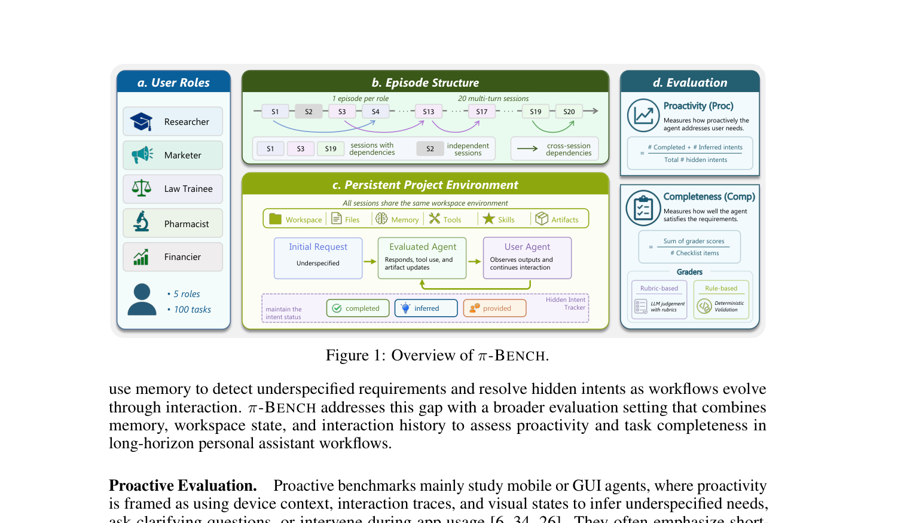
Figure 1: Overview of π-BENCH.
Proactive Evaluation. Proactive benchmarks mainly study mobile or GUI agents, where proactivity is framed as using device context, interaction traces, and visual states to infer underspecified needs, ask clarifying questions, or intervene during app usage [6, 34, 26]. They often emphasize short- horizon everyday tasks with clear endpoints, such as booking and ordering [15, 4, 27]. This leaves professional workflows and artifact-centered tasks underexplored, especially cases in which missing requirements may affect later edits or project decisions [29, 47]. In contrast, π-BENCH focuses on long-horizon personal assistance in persistent workspaces where hidden intents may emerge late and earlier artifacts directly determine downstream decisions.
主动性评测。主动性基准主要面向移动或 GUI 智能体，将主动性界定为利用设备上下文、交互痕迹与视觉状态推断欠明确的需求、提出澄清性问题，或在应用使用过程中适时干预 [6, 34, 26]，且往往侧重端点清晰的短程日常任务，如预订与下单 [15, 4, 27]。专业工作流与以工件为中心的任务因此仍缺乏研究——尤其是缺失需求可能影响后续编辑或项目决策的情形 [29, 47]。相比之下，π-BENCH 聚焦持久工作区中的长程个人协助：隐藏意图可能较晚才显现，而早期工件直接决定下游决策。
3Benchmark3 基准
In this section, we present the design of π-BENCH, as illustrated in Fig. 1. We target long-horizon personal assistant workflows in persistent project environments, where each session begins with a natural but underspecified request. Missing requirements may emerge after intermediate artifacts are produced and the interaction progresses, while preferences may carry across sessions and shape later decisions [14, 21, 19]. π-BENCH includes five user roles across distinct domains (researcher, marketer, law trainee, pharmacist, and financier), covering diverse workflows and constraints. For each role, we construct one episode with 20 sessions, where each session corresponds to one multi- turn task. We organize these tasks into multi-session episodes with cross-session dependencies, and evaluate agents on both proactive intent resolution (Proactivity) and task completion (Completeness).
本节介绍 π-BENCH 的设计（见图 1）。我们面向持久项目环境中的长程个人助理工作流：每次会话都以一个自然但欠明确的请求开始，缺失的需求可能在中间工件产出、交互推进之后才浮现，而偏好则可能跨越会话延续、影响后续决策 [14, 21, 19]。π-BENCH 涵盖五个不同领域的用户角色（研究员、市场营销人员、法律实习生、药剂师与金融从业者），覆盖多样的工作流与约束。针对每个角色，我们构建一个含 20 个会话的情景（episode），每个会话对应一个多轮任务。这些任务被组织为带跨会话依赖的多会话情景，并从主动意图化解（Proactivity）与任务完成（Completeness）两个维度评测智能体。
3.1Evaluated Agent System3.1 被评测的智能体系统
Agent paradigm. We focus on long-horizon personal agents that assist users in both professional and everyday knowledge work by planning, producing, and refining concrete artifacts such as code, documents, and structured outputs [29, 47, 16]. These agents typically adopt a modular design, where capabilities are composed from reusable components in a ReAct style [42], including tool interfaces, skills, and workspace operations. In our setting, the agent acts over a persistent project environment and makes progress mainly by iteratively updating intermediate artifacts.
智能体范式。我们关注在专业与日常知识工作中协助用户的长程个人智能体：它们通过规划、产出与打磨代码、文档、结构化输出等具体工件来完成任务 [29, 47, 16]。这类智能体多采用模块化设计，以 ReAct 风格 [42] 将能力组合自可复用组件，包括工具接口、技能与工作区操作。在本文设定中，智能体在持久项目环境中行动，主要通过迭代更新中间工件来推进任务。
Sessions. A user interacts with the agent through multiple sessions, and each session is a multi-turn conversation aimed at completing one task. Sessions share the same project workspace, so relevant files, intermediate artifacts, and prior outputs can carry over when appropriate. When needed, the agent may also consult memory to retain user-specific preferences or earlier decisions and apply them consistently in later sessions.
会话。用户通过多个会话与智能体交互，每个会话都是旨在完成一项任务的多轮对话。各会话共享同一个项目工作区，相关文件、中间工件与先前输出可按需延续使用。必要时，智能体还可查询记忆，以保留用户特有的偏好或先前决策，并在后续会话中一致地加以应用。
Tools and skills. Personal assistant agents operate in real-world environments where progress relies on invoking external tools and reusable skills to manipulate persistent artifacts [32, 43, 30, 39]. Accordingly, our tasks are grounded in practical tool and skill interfaces, such as shopping tool, web search tool, and data processing skill. This design requires the agent to coordinate tool calls and skill invocation to iteratively refine artifacts and produce task-ready outputs.
工具与技能。个人助理智能体运行在真实环境中，任务进展依赖于调用外部工具与可复用技能来操作持久工件 [32, 43, 30, 39]。为此，本文任务扎根于实用的工具与技能接口，如购物工具、网页搜索工具与数据处理技能。这要求智能体协调工具调用与技能调用，迭代打磨工件，产出可直接交付的输出。
3.2User Agent3.2 用户智能体
User roles. π-BENCH is centered on a user agent that simulates one user over an extended period. Each user is specified by a role that captures stable attributes, including occupation, routines, prefer- ences, working style, and long-term goals [14]. Roles are constructed with domain experts to ensure realism and sufficient specificity, and are then lightly normalized to keep granularity and coverage consistent across users. Throughout the paper, we denote the evaluated system as the agent and the simulated counterpart as the user.
用户角色。π-BENCH 以一个用户智能体为中心，由其在较长时间内模拟同一位用户。每个用户由一个角色刻画，涵盖职业、日常惯例、偏好、工作风格与长期目标等稳定属性 [14]。角色由领域专家参与构建，以确保真实性与充分的特异性，随后做轻度归一化，使用户之间的粒度与覆盖面保持一致。全文将被评测系统称为智能体（agent），将其模拟对手称为用户（user）。
Episodes. For each user agent, we define an episode that simulates the user’s long-horizon workflow across multiple tasks. Each episode contains 20 sessions, and each session corresponds to one task addressed through multi-turn interaction. Across sessions, the agent may leverage memory to carry forward relevant information when needed.
情景（episode）。对每个用户智能体，我们定义一个情景，模拟该用户跨多个任务的长程工作流。每个情景包含 20 个会话，每个会话对应一个经由多轮交互完成的任务。跨会话时，智能体可在需要时借助记忆延续相关信息。
Workflow-grounded task design. To model OpenClaw-style assistance, π-BENCH builds tasks around persistent workspace artifacts, long-horizon professional workflows, and recoverable hidden intents.* Each instance is derived from domain experts’ authentic work routines and supporting materials, then shaped to require producing or revising concrete deliverables in the project environ- ment. Progress depends on reading or updating files, repairing drafts, synthesizing evidence across documents, coordinating tools or skills, and preserving conventions from earlier sessions. Human experts further review each task to ensure it is realistic, feasible with the available files, tools, skills, and graders, and grounded in a correct and well-scoped workflow. These characteristics are reflected in App. A and illustrated by case studies in App. J.
扎根工作流的任务设计。为建模 OpenClaw 式协助，π-BENCH 围绕持久工作区工件、长程专业工作流与可恢复的隐藏意图构建任务。* 每个实例均源自领域专家真实的工作惯例与配套材料，再经塑形，要求在项目环境中产出或修订具体交付物。任务进展有赖于读取或更新文件、修复草稿、跨文档综合证据、协调工具或技能，以及延续此前会话确立的规范。人类专家逐一审查每个任务，确保其真实、在现有文件、工具、技能与评分器下可行，并扎根于正确且边界清晰的工作流。这些特征体现在附录 A，附录 J 的案例研究则给出具体例证。
Dependency structure. In long-horizon use, sessions are not always independent, as later requests may rely on information from earlier interactions [10]. We therefore incorporate cross-session dependencies within each episode. Among the 20 tasks, we include (1) six strong dependency groups, each comprising two to three tasks that share essential carry-over information for successful completion, and (2) five largely independent tasks that broaden coverage of stand-alone workflows. In the latter case, any dependencies are lightweight and typically reflect general preferences, such as applying a consistent file naming convention or output directory structure.
依赖结构。长程使用中，会话并不总是彼此独立——后续请求可能依赖早期交互的信息 [10]。为此，我们在每个情景内部引入跨会话依赖：20 个任务中包含 (1) 六个强依赖组，每组含两到三个共享关键携带信息、离开它便难以完成的任务；(2) 五个基本独立的任务，以拓宽对独立工作流的覆盖。后一类任务中的依赖都是轻量级的，通常仅体现一般性偏好，如沿用一致的文件命名规范或输出目录结构。
3.3Task Formulation3.3 任务形式化
Initial request. Users rarely begin a session with a complete specification of what they ultimately need. Instead, they usually provide a short, goal-oriented prompt and refine requirements as the agent produces intermediate artifacts and asks targeted questions [38, 5, 13]. Accordingly, each session in π-BENCH starts with an initial request u1 that initiates the task. The initial request is designed to be natural and contextually plausible, while remaining minimally sufficient to enable progress and preserve realistic underspecification. In addition to user-issued messages, we also allow environment-triggered signals to start a session, such as external structured inputs or agent heartbeats [11] that the agent should recognize and respond to proactively.
初始请求。用户很少以对最终需求的完整说明开启会话，通常只给出一个简短、面向目标的提示，并随智能体产出中间工件、提出针对性问题而逐步细化需求 [38, 5, 13]。因此，π-BENCH 中每个会话都以发起任务的初始请求 u1 开始。初始请求被设计得自然且贴合上下文，同时保持在最低限度上足以推进任务，从而保留真实的欠明确性。除用户消息外，我们也允许由环境触发的信号开启会话——例如外部结构化输入或智能体心跳（heartbeat）[11]——智能体应识别这些信号并主动响应。
Hidden intents. To formalize underspecification, each task is annotated with a set of hidden intents I = {i1, . . . , im}. Each intent i represents a latent requirement that should shape how the task is handled, e.g., constraints, preferences, and downstream dependencies. Hidden intents can be session-local or persistent across sessions. The agent can satisfy an intent by inferring it from prior interaction and memory, or by asking a focused question that elicits the missing requirement and then acting on it.
隐藏意图。为形式化欠明确性，每个任务都标注了一组隐藏意图 I = {i1, . . . , im}。每个意图 i 代表一个应影响任务处理方式的潜在需求，如约束、偏好与下游依赖。隐藏意图可以是会话局部的，也可以跨会话持续存在。智能体既可从先前交互与记忆中推断意图来满足它，也可提出一个聚焦的问题引出缺失需求，再据此行动。
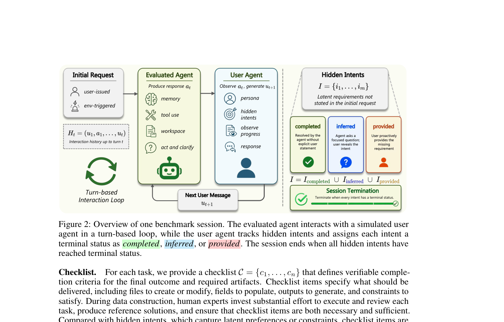
Figure 2: Overview of one benchmark session. The evaluated agent interacts with a simulated user agent in a turn-based loop, while the user agent tracks hidden intents and assigns each intent a terminal status as completed, inferred, or provided. The session ends when all hidden intents have reached terminal status.
Graders. We implement checklist verification with two types of graders:
评分器（grader）。我们用两类评分器实现清单式验证：
• Rubric-based evaluation. For open-ended content where deterministic checks are unsuitable, we use rubric-based model evaluation to assess whether the output satisfies task requirements and user constraints. • Rule-based verification. For objective conditions, we apply deterministic rule-based verification, such as file existence, exact string matching, correct tool use, and schema validity.
• 基于量规（rubric）的评估。对于不适合确定性检查的开放式内容，采用基于量规的模型评估，判断输出是否满足任务要求与用户约束。 • 基于规则的验证。对于客观条件，采用确定性的基于规则的验证，如文件存在性、精确字符串匹配、正确的工具使用与 schema 有效性。
3.4Session Interaction and Intent Tracking3.4 会话交互与意图跟踪
Interaction process. Fig. 2 illustrates the turn-based loop for one benchmark session with hidden intents I = {i1, . . . , im} and checklist C = {c1, . . . , cn}. Each session starts with an initial request u1 that initiates the task. At each turn, the agent produces a response at, which may involve tool use and artifact creation or updates in the workspace. The user agent then observes the agent response together with any newly produced or updated artifacts, updates the tracking state for hidden intents in I by assigning terminal statuses when applicable, and generates the next user message. If the agent asks a relevant question, the user agent answers it. Otherwise, if some requirements remain underspecified, the user agent proactively provides the missing task-relevant information to keep the task moving. The interaction proceeds in this alternating manner until the session terminates. Formally, let ut and at denote the user and agent utterances at turn t. We write the interaction history up to turn t as
交互过程。图 2 展示了单个基准会话中基于轮次的循环，其中隐藏意图为 I = {i1, . . . , im}，清单为 C = {c1, . . . , cn}。每个会话以发起任务的初始请求 u1 开始。每一轮中，智能体产出响应 at，其中可能涉及工具使用以及工作区内工件的创建或更新。用户智能体随后观察智能体响应及任何新产出或更新的工件，在适用时为 I 中的隐藏意图赋予终结状态、更新其跟踪状态，并生成下一条用户消息。若智能体提出相关问题，用户智能体予以回答；否则，若仍有需求欠明确，用户智能体会主动补充缺失的任务相关信息，让任务继续推进。交互如此交替进行，直至会话终止。形式化地，令 ut 与 at 表示第 t 轮的用户与智能体话语，截至第 t 轮的交互历史记为
Ht = (u1, a1, . . . , ut), (1)
Ht = (u1, a1, . . . , ut), (1)
and use H to denote the resulting session trajectory. At each turn, the agent produces a response at, including any tool calls and workspace updates. A session terminates when each intent in I has been assigned a terminal status and the agent has produced its final response. The full assignment procedure, response mechanism, and prompt template are provided in App. B.
并用 H 表示由此得到的会话轨迹。每一轮中，智能体产出响应 at，包括所有工具调用与工作区更新。当 I 中每个意图都被赋予终结状态、且智能体产出最终响应时，会话终止。完整的赋值流程、响应机制与提示模板见附录 B。
Intent status assignment. Each hidden intent i ∈I is initially unstated in the initial re- quest. As the interaction unfolds along H, we assign i exactly one terminal status from the set {completed, inferred, provided}:
意图状态赋值。每个隐藏意图 i ∈I 在初始请求中最初均未被言明。随着交互沿 H 展开，我们从集合 {completed, inferred, provided} 中为 i 恰好赋予一个终结状态：
• completed: the agent resolves i without the user explicitly stating it, by producing an action or artifact consistent with the intent. • inferred: the agent asks a focused question that directly targets i, and the user reveals the missing requirement in the next turn, after which the agent can act on it. • provided: the agent neither resolves i nor asks a relevant question, and the user must proactively supply i to move the task forward.
• completed：用户未明确言明，智能体便化解了 i，其产出的动作或工件与该意图一致。 • inferred：智能体提出了直接针对 i 的聚焦问题，用户在下一轮透露缺失需求，此后智能体据此行动。 • provided：智能体既未化解 i，也未提出相关问题，用户必须主动提供 i 才能推进任务。
Session termination. Once an intent is assigned a terminal status, it is excluded from further tracking within the same session. A session terminates only when every intent in I has been assigned a terminal status and the agent has produced its final response. At this point, each hidden intent has either been completed by the agent, elicited through a clarification, or provided by the user. The user agent has no further hidden information to provide, and the interaction has reached a natural stopping point. Let Icom, Iinf, and Ipro denote the subsets of I assigned to completed, inferred, and provided under H, respectively, so that
会话终止。意图一旦被赋予终结状态，便在同一会话内不再被跟踪。仅当 I 中每个意图都被赋予终结状态、且智能体产出最终响应时，会话才终止。此时，每个隐藏意图要么已被智能体完成，要么经由澄清被引出，要么由用户提供。用户智能体不再有隐藏信息可提供，交互到达自然的停止点。令 Icom、Iinf 与 Ipro 分别表示在 H 下被赋予 completed、inferred 与 provided 的 I 的子集，于是
I = Icom ∪Iinf ∪Ipro and Icom, Iinf, Ipro are disjoint. (2)
I = Icom ∪Iinf ∪Ipro and Icom, Iinf, Ipro are disjoint. (2)
3.5Evaluation Protocol3.5 评估协议
We evaluate each agent on both proactivity and completeness, which measure whether the agent resolves hidden intents proactively and ultimately satisfies the task’s verifiable requirements. Detailed evaluation protocols are provided in App. C.
我们从主动性与完整性两个维度评测每个智能体：前者衡量智能体能否主动化解隐藏意图，后者衡量其最终能否满足任务的可验证要求。详细评估协议见附录 C。
Proactivity. We define the proactivity score as the fraction of intents that the agent resolves proactively, either by direct completion or by targeted elicitation,
主动性。我们将主动性得分定义为智能体主动化解的意图占比——无论经由直接完成，还是经由有针对性的引出：
PROC(H) = |Icom| + |Iinf|PROC(H) = |Icom| + |Iinf|
|I| . (3)|I| . (3)
The score is designed to separate agent-driven requirement discovery (Iinf and Icom) from user-driven disclosure (Ipro). It captures whether the agent goes beyond the surface request to identify what remains underspecified and reduce the user’s operational and cognitive effort through appropriate action or clarification. We give Icom and Iinf equal credit because both reflect agent initiative: some intents can be addressed directly, while others should be resolved through targeted clarification.
该得分旨在区分智能体驱动的需求发现（Iinf 与 Icom）与用户驱动的信息透露（Ipro）。它衡量智能体能否超越表面请求，识别仍然欠明确之处，并通过恰当的行动或澄清降低用户的操作与认知负担。Icom 与 Iinf 被赋予同等权重，因为二者都体现智能体的主动性：有些意图可直接处理，另一些则应经由有针对性的澄清化解。
Completeness. Completeness measures whether the agent ultimately satisfies the task’s verifiable requirements over the course of a session. For each checklist item c ∈C, we compute a grader score s(c, H) ∈{0, 1} using either a deterministic program or rubric-based model evaluation, following Sec. 3.3. Using H allows the grader to incorporate evidence accumulated across turns, including intermediate artifacts and partial progress produced at different points in the interaction. We then define the task completeness score as
完整性。完整性衡量智能体在整个会话过程中最终是否满足任务的可验证要求。对每个清单项 c ∈C，我们按照第 3.3 节，以确定性程序或基于量规的模型评估计算评分器得分 s(c, H) ∈{0, 1}。使用 H 让评分器得以纳入跨轮次累积的证据，包括交互中不同时点产出的中间工件与部分进展。任务完整性得分随后定义为
COMP(H) = 1COMP(H) = 1
s(c, H). (4)s(c, H). (4)
|C||C|
Metric relationship. Proactivity and completeness capture related but distinct aspects of agent behavior. In our protocol, the simulated user eventually provides any hidden intent that the agent fails to elicit or address, so the final trajectory can contain the full set of intents even when the agent passively waits for user-provided information. Thus, PROC measures how much the agent drives requirement discovery, while COMP measures whether the agent turns the resulting trajectory into correct artifacts and decisions. The two scores can therefore diverge substantially and reflect different capabilities. This separation is analyzed in Sec. 4.3 and discussed further in App. H.1.
指标关系。主动性与完整性刻画智能体行为中相关而又不同的两个方面。在我们的协议中，模拟用户最终会补上智能体未能引出或处理的任何隐藏意图，因此即便智能体被动等待用户提供信息，最终轨迹仍可覆盖全部意图。于是，PROC 衡量智能体在多大程度上驱动需求发现，COMP 则衡量智能体能否将由此得到的轨迹转化为正确的工件与决策。两个得分因此可能大幅背离，反映的是不同能力。这一区分在第 4.3 节分析，并在附录 H.1 中进一步讨论。
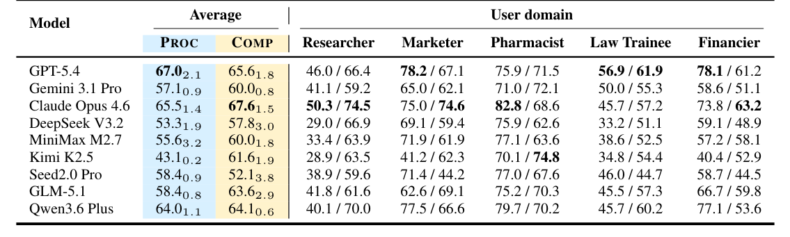
Table 1: Overall results for PROC / COMP (%). Results are averaged over three runs, with subscripts denoting standard deviations.表 1 报告了所有被评测模型在五个用户领域上的总体性能。
4Experiments4 实验
4.1Setup4.1 实验设置
Model Setup. We evaluate nine frontier LLMs spanning distinct model families: GPT-5.4 [28], Gemini-3.1 Pro [9], Claude 4.6 Opus [2], DeepSeek V3.2 [17], MiniMax M2.7 [24], Kimi K2.5 [35], Seed2.0 Pro [3], GLM-5.1 [45], and Qwen3.6 Plus [31]. All models are evaluated under the same agentic scaffold, adapted from Nanobot [11], so that performance differences primarily reflect model capability rather than scaffold-specific components.
模型设置。我们评测九个来自不同模型家族的前沿 LLM：GPT-5.4 [28]、Gemini-3.1 Pro [9]、Claude 4.6 Opus [2]、DeepSeek V3.2 [17]、MiniMax M2.7 [24]、Kimi K2.5 [35]、Seed2.0 Pro [3]、GLM-5.1 [45] 与 Qwen3.6 Plus [31]。所有模型均在同一智能体脚手架下评测，该脚手架改编自 Nanobot [11]，从而使性能差异主要反映模型能力，而非脚手架的特定组件。
Environment Setup. We use the default decoding parameters for all models and enable thinking. We report PROC and COMP as the main metrics. Since long-horizon agent behavior can be stochastic [25], we run each task three times with independent trajectories and report averaged results with standard deviations for robust estimation. We use GPT-5.4 as the base model for the user agent and as the rubric-based grader, with temperature set to zero.
环境设置。所有模型均使用默认解码参数并开启思考（thinking）。主要指标为 PROC 与 COMP。鉴于长程智能体行为可能带有随机性 [25]，每个任务以独立轨迹运行三次，报告均值与标准差以保证估计稳健。用户智能体的基础模型与基于量规的评分器均采用 GPT-5.4，温度设为零。
4.2Main Results4.2 主要结果
Model trends. The aggregate results show that π-BENCH is challenging and discriminative. Across the nine models, average COMP ranges from 52.1 to 67.6, while average PROC ranges from 43.1 to 67.0, leaving room for further progress. GPT-5.4 achieves the highest average PROC at 67.0, while Claude 4.6 Opus obtains the highest average COMP at 67.6. Qwen3.6 Plus is also competitive on both dimensions, with 64.0 PROC and 64.1 COMP. The standard deviations are generally small, with most values below 2.0, which indicates that the aggregate trends are stable across repeated runs. Notably, Qwen3.6 Plus maintains low standard deviations while achieving strong scores on both metrics. At the same time, the rankings are not identical across metrics. For example, Kimi K2.5 reaches 61.6 COMP but only 43.1 PROC, whereas Seed2.0 Pro reaches 58.4 PROC but 52.1 COMP. This suggests that completing visible workflow requirements and proactively handling underspecified user needs remain related but distinct capabilities.
模型趋势。总体结果表明 π-BENCH 既具挑战性又有区分度。九个模型的平均 COMP 介于 52.1 至 67.6，平均 PROC 介于 43.1 至 67.0，仍有充分的提升空间。GPT-5.4 取得最高的平均 PROC（67.0），Claude 4.6 Opus 取得最高的平均 COMP（67.6）；Qwen3.6 Plus 在两个维度上同样具有竞争力，PROC 为 64.0，COMP 为 64.1。标准差总体较小，多数低于 2.0，说明总体趋势在重复运行中保持稳定；尤其 Qwen3.6 Plus 在两项指标均取得较高分数的同时保持了较低的标准差。与此同时，两个指标下的排名并不一致：例如 Kimi K2.5 的 COMP 达 61.6，PROC 却仅 43.1；Seed2.0 Pro 的 PROC 达 58.4，COMP 却仅 52.1。可见，完成可见的工作流需求与主动处理欠明确的用户需求仍是相关但不同的能力。
Domain trends. Performance varies substantially across user domains. Pharmacist tasks are the easiest overall, with the highest average PROC and COMP. This is consistent with many Pharmacist instances in π-BENCH being grounded in concrete local files, literature summaries, lab records, and domain-specific skills needed for the workflow. Researcher tasks show a different pattern, with relatively low PROC despite strong COMP. This domain often involves research planning, rebuttal preparation, literature synthesis, and other challenging tasks with less standardized workflows. Law Trainee and Financier have the lowest average COMP. Their workflows often require risk-oriented legal or financial judgment, which makes task completion more difficult. These results show that π-BENCH captures variation across domains. Concrete case studies are provided in App. J.
领域趋势。性能在用户领域间差异显著。药剂师（Pharmacist）任务总体最容易，平均 PROC 与 COMP 均为最高——这与 π-BENCH 中许多药剂师实例扎根于具体本地文件、文献摘要、实验记录及工作流所需领域技能相一致。研究员（Researcher）任务则呈现另一番模式：COMP 较强而 PROC 相对偏低。该领域常涉及研究规划、rebuttal 准备、文献综合等工作流欠标准化的挑战性任务。Law Trainee 与 Financier 的平均 COMP 最低，其工作流往往需要面向风险的法律或金融判断，任务完成因此更为困难。这些结果表明 π-BENCH 能捕捉领域间差异。具体案例研究见附录 J。
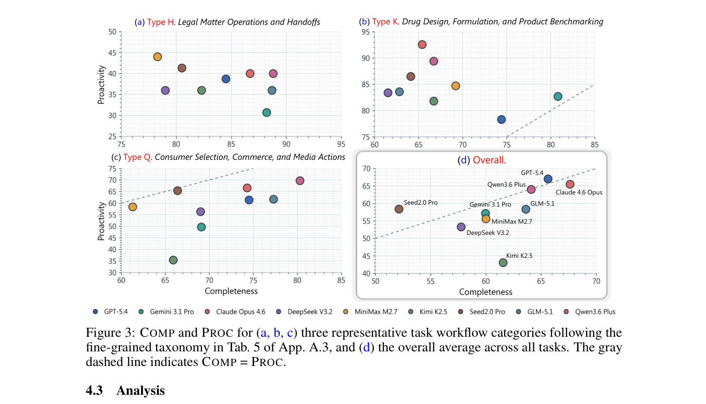
Figure 3: COMP and PROC for (a, b, c) three representative task workflow categories following the fine-grained taxonomy in Tab. 5 of App. A.3, and (d) the overall average across all tasks. The gray dashed line indicates COMP = PROC.
Performance by task type. Fig. 3 (a, b, c) compares COMP and PROC on three representative task categories. Detailed per-category results are reported in App. F.3 and Tab. 8. Legal matter operations and handoffs (H) show the largest gap, with high average COMP but low average PROC (84.1% vs. 38.1%). In these cases, agents can often draft the requested document, but they fail to ensure that the matter is ready for handoff, leaving hidden intents about missing materials, blockers, and follow-up actions for the user to surface. Similarly, consumer selection, commerce, and media actions (Q) are more completion-oriented (70.8% COMP vs. 58.2% PROC). Drug design, formulation, and product benchmarking (K) show the opposite pattern, with higher PROC than COMP (84.9% vs. 68.0%). Here, hidden intents are often grounded in concrete scientific constraints, such as assumptions and experimental evidence, which agents can infer more easily than they can produce a fully comprehensive technical synthesis. Overall, performance varies across task categories and metrics, suggesting that different workflow structures stress different model capabilities.
按任务类型的性能。图 3 (a, b, c) 比较了三类代表性任务上的 COMP 与 PROC，详细的分类别结果见附录 F.3 与表 8。法律事务操作与移交（H）的差距最大：平均 COMP 高而平均 PROC 低（84.1% vs. 38.1%）。这类情形中，智能体往往能起草所要求的文件，却未能确保事务已具备移交条件，把关于缺失材料、阻塞点与后续行动的隐藏意图留给用户自行呈现。类似地，消费选择、商务与媒体操作（Q）更偏完成导向（70.8% COMP vs. 58.2% PROC）。药物设计、配方与产品基准测试（K）则相反，PROC 高于 COMP（84.9% vs. 68.0%）：其隐藏意图多扎根于具体科学约束（如假设与实验证据），智能体对此类约束的推断，比产出一份全面的技术综述要容易。总体来看，性能随任务类别与指标而变化，说明不同的工作流结构考验着不同的模型能力。
Distinguishing proactivity from completeness. Fig. 3 (d) compares aggregate PROC and COMP from Tab. 1. The two metrics are positively related, as several high-scoring models appear near the upper-right region, but they measure different aspects of assistance. Since π-BENCH continues until each hidden intent is either resolved by the agent or supplied by the simulated user, a reactive model can still recover a reasonable COMP score after the missing requirements become explicit. PROC instead measures whether the agent reduces this burden by resolving hidden intents or eliciting them before the user has to provide them.
区分主动性与完整性。图 3 (d) 比较了表 1 中的总体 PROC 与 COMP：两个指标正相关，若干高分模型集中于右上区域，但它们衡量的是协助的不同方面。由于 π-BENCH 会持续进行，直到每个隐藏意图或由智能体化解、或由模拟用户提供，被动响应的模型在缺失需求被挑明之后仍能取得不低的 COMP 分数；PROC 衡量的则是智能体能否在用户被迫提供之前化解或引出隐藏意图，从而减轻这一负担。
The off-diagonal cases make this distinction clear. Kimi K2.5 attains a relatively high COMP score but a much lower PROC score, suggesting that it can execute tasks once constraints are stated, yet often waits for the user to reveal those constraints step by step. This contrast reveals a practical decoupling between proactivity and completeness, where reactive recovery can preserve final task quality while shifting requirement discovery back to the user. Seed2.0 Pro shows the reverse pattern, with higher PROC than COMP, indicating that early discovery of hidden intents is not sufficient when final execution remains weak. This behavior is consistent with our evaluation design, where hidden intents capture latent interaction requirements and checklist items capture verifiable obligations in the final outcome (App. H.2). By making this gap observable, π-BENCH tests whether agents merely complete underspecified workflows after user intervention or proactively reduce the user burden while moving those workflows toward successful completion.
非对角的案例将这一区分展现得尤为清晰。Kimi K2.5 的 COMP 相对较高，PROC 却低得多，说明其能在约束被言明后执行任务，却常常等着用户一步步揭示这些约束。这一对比揭示了主动性与完整性在实践中的解耦：被动补救可以保住最终任务质量，却把需求发现推回给用户。Seed2.0 Pro 则呈相反模式，PROC 高于 COMP，说明若最终执行乏力，仅靠早期发现隐藏意图并不够。这一行为与我们的评测设计一致：隐藏意图捕捉潜在的交互需求，清单项捕捉最终结果中可验证的义务（附录 H.2）。通过让这一差距可被观察，π-BENCH 检验智能体究竟只是在用户干预后补完欠明确的工作流，还是在推动工作流走向成功完成的同时主动降低用户负担。

Figure 4: Relationship between average interaction turns per task and model-level PROC. Each point de- notes one model.
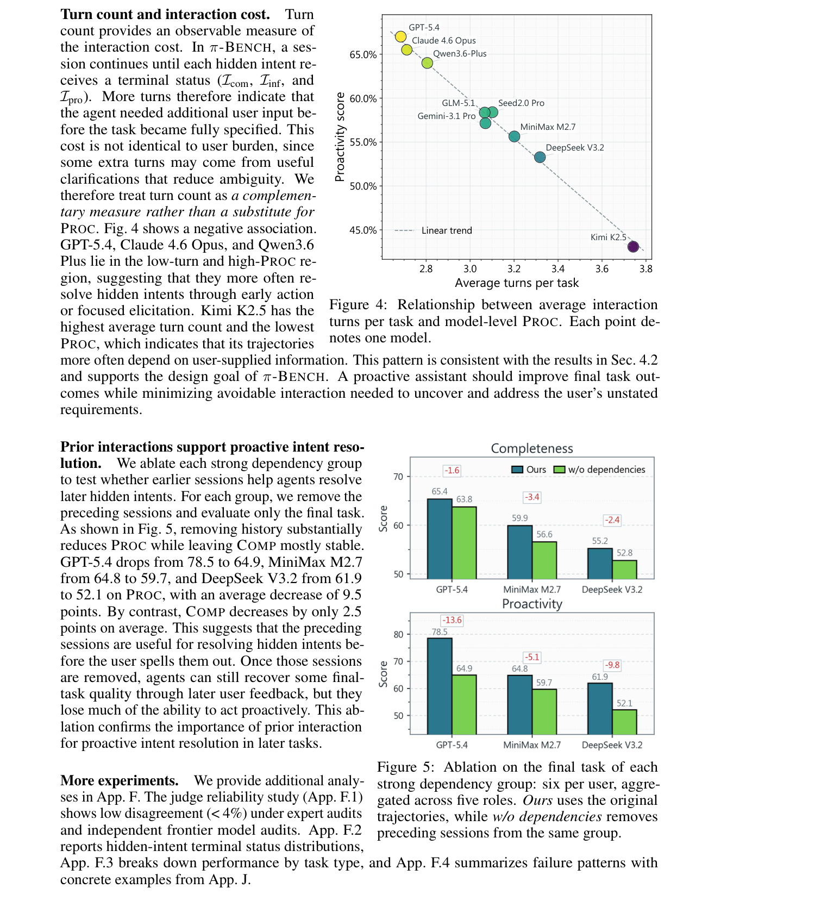
Figure 5: Ablation on the final task of each strong dependency group: six per user, aggre- gated across five roles. Ours uses the original trajectories, while w/o dependencies removes preceding sessions from the same group.
5Conclusions5 结论
We introduced π-BENCH, a benchmark for evaluating proactive personal assistant agents in long- horizon workflows, covering 100 multi-turn tasks across five domain-specific personas with hidden
我们提出了 π-BENCH——一个评测长程工作流中主动式个人助理智能体的基准，涵盖五个领域特定人设下的 100 个多轮任务，带有隐藏
intents, inter-task dependencies, and cross-session continuity. By jointly evaluating proactivity and completeness, π-BENCH tests whether agents can resolve underspecified requests, reuse prior context, and produce task-ready artifacts in persistent workspaces. Experiments on nine frontier models reveal clear gaps, distinguish proactivity from completeness, and show that prior interaction history helps agents resolve hidden intents while reducing avoidable user interaction.
意图、任务间依赖与跨会话连续性。π-BENCH 联合评测主动性与完整性，检验智能体能否化解欠明确的请求、复用先前上下文，并在持久工作区中产出可直接交付的工件。对九个前沿模型的实验揭示了明显差距，将主动性与完整性区分开来，并表明先前的交互历史既有助于智能体化解隐藏意图，又能减少本可避免的用户交互。
6Limitations6 局限性
Our benchmark has several inherent limitations. The users are simulated rather than real humans, which is difficult to avoid because long horizon evaluation with live users is costly, hard to reproduce, and difficult to scale. In addition, our experiments use a single agentic scaffold adapted from Nanobot, which provides a controlled evaluation setup but may not capture the full variation introduced by alternative scaffolds, which can add substantial adaptation effort and scaffold-specific confounds.
本基准存在若干固有限制。用户为模拟用户而非真实人类——这一点难以避免，因为涉及真实用户的长程评测成本高昂、难以复现且难以规模化。此外，实验仅使用单一改编自 Nanobot 的智能体脚手架，虽提供了受控的评测环境，却可能无法覆盖其他脚手架带来的全部差异；引入这些脚手架需要大量适配工作，还会引入脚手架特有的混淆因素。
Bibliography参考文献
[1] Anthropic. Claude code. https://claude.com/product/claude-code, 2026. AI-powered coding
[REF] 原样保留英文文献列表
[2] Anthropic. Introducing Claude Opus 4.6. https://www.anthropic.com/news/claude-opus-4-6,
[REF] 原样保留英文文献列表
[3] Bytedance Seed. Seed2.0 model card: Towards intelligence frontier for real-world complexity. https://lf3-static.bytednsdoc.com/obj/eden-cn/lapzild-tss/ljhwZthlaukjlkulzlp/ seed2/0214/Seed2.0%20Model%20Card.pdf, 2026. Accessed: 2026-04-22.
[REF] 原样保留英文文献列表
[5] Maximillian Chen, Ruoxi Sun, Tomas Pfister, and Sercan Ö Arık. Learning to clarify: Multi-turn conversations with action-based contrastive self-training. arXiv preprint arXiv:2406.00222, 2024.
[REF] 原样保留英文文献列表
[6] Tongbo Chen, Zhengxi Lu, Zhan Xu, Guocheng Shao, Shaohan Zhao, Fei Tang, Yong Du, Kaitao Song,
[REF] 原样保留英文文献列表
Yizhou Liu, Yuchen Yan, et al. Knowu-bench: Towards interactive, proactive, and personalized mobile
[REF] 原样保留英文文献列表
[7] Alexandre Drouin, Maxime Gasse, Massimo Caccia, Issam H Laradji, Manuel Del Verme, Tom Marty,
[REF] 原样保留英文文献列表
Léo Boisvert, Megh Thakkar, Quentin Cappart, David Vazquez, et al. Workarena: How capable are web agents at solving common knowledge work tasks? arXiv preprint arXiv:2403.07718, 2024.
[REF] 原样保留英文文献列表
[9] Google DeepMind. Gemini 3.1 pro. https://deepmind.google/models/gemini/pro/, 2026. Ac-
[REF] 原样保留英文文献列表
[13] Kirandeep Kaur, Vinayak Gupta, Aditya Gupta, and Chirag Shah. The proper approach to proactivity:
[REF] 原样保留英文文献列表
[14] Serin Kim, Sangam Lee, and Dongha Lee. Persona2web: Benchmarking personalized web agents for
[REF] 原样保留英文文献列表
[15] Dezhi Kong, Zhengzhao Feng, Qiliang Liang, Hao Wang, Haofei Sun, Changpeng Yang, Yang Li, Peng
[REF] 原样保留英文文献列表
Zhou, Shuai Nie, Hongzhen Wang, et al. Proactivemobile: A comprehensive benchmark for boosting proactive intelligence on mobile devices. arXiv preprint arXiv:2602.21858, 2026.
[REF] 原样保留英文文献列表
[16] Xiangyi Li, Kyoung Whan Choe, Yimin Liu, Xiaokun Chen, Chujun Tao, Bingran You, Wenbo Chen,
[REF] 原样保留英文文献列表
Zonglin Di, Jiankai Sun, Shenghan Zheng, et al. Clawsbench: Evaluating capability and safety of llm productivity agents in simulated workspaces. arXiv preprint arXiv:2604.05172, 2026.
[REF] 原样保留英文文献列表
[17] Aixin Liu, Aoxue Mei, Bangcai Lin, Bing Xue, Bingxuan Wang, Bingzheng Xu, Bochao Wu, Bowei
[REF] 原样保留英文文献列表
[19] Shuochen Liu, Junyi Zhu, Long Shu, Junda Lin, Yuhao Chen, Haotian Zhang, Chao Zhang, Derong Xu,
[REF] 原样保留英文文献列表
[21] Yibo Lyu, Gongwei Chen, Rui Shao, Weili Guan, and Liqiang Nie. Personalalign: Hierarchical im-
[REF] 原样保留英文文献列表
plicit intent alignment for personalized gui agent with long-term user-centric records. arXiv preprint arXiv:2601.09636, 2026.
[REF] 原样保留英文文献列表
[22] Shiva Krishna Reddy Malay, Shravan Nayak, Jishnu Sethumadhavan Nair, Sagar Davasam, Aman Ti-
[REF] 原样保留英文文献列表
wari, Sathwik Tejaswi Madhusudhan, Sridhar Krishna Nemala, Srinivas Sunkara, and Sai Rajeswar. Enterpriseops-gym: Environments and evaluations for stateful agentic planning and tool use in enterprise settings. arXiv preprint arXiv:2603.13594, 2026.
[REF] 原样保留英文文献列表
[23] Grégoire Mialon, Clémentine Fourrier, Thomas Wolf, Yann LeCun, and Thomas Scialom. Gaia: a
[REF] 原样保留英文文献列表
[24] MiniMax. Minimax m2.7: Early echoes of self-evolution. https://www.minimax.io/news/ minimax-m27-en, 2026. Accessed: 2026-04-22.
[REF] 原样保留英文文献列表
[25] Zairah Mustahsan, Abel Lim, Megna Anand, Saahil Jain, and Bryan McCann. Stochasticity in agentic
[REF] 原样保留英文文献列表
[26] Deepak Nathani, Cheng Zhang, Chang Huan, Jiaming Shan, Yinfei Yang, Alkesh Patel, Zhe Gan,
[REF] 原样保留英文文献列表
[27] Hongyi Nie, Xunyuan Liu, Yudong Bai, Yaqing Wang, Yang Liu, Quanming Yao, and Zhen Wang.
[REF] 原样保留英文文献列表
[28] OpenAI. Introducing GPT-5.4. https://openai.com/index/introducing-gpt-5-4, 2026. Ac-
[REF] 原样保留英文文献列表
[29] OpenClaw. Openclaw. https://github.com/openclaw/openclaw, 2026. Open-source personal AI
[REF] 原样保留英文文献列表
[30] Shishir G Patil, Tianjun Zhang, Xin Wang, and Joseph E Gonzalez. Gorilla: Large language model
[REF] 原样保留英文文献列表
connected with massive apis. Advances in Neural Information Processing Systems, 37:126544–126565, 2024.
[REF] 原样保留英文文献列表
[32] Timo Schick, Jane Dwivedi-Yu, Roberto Dessì, Roberta Raileanu, Maria Lomeli, Eric Hambro, Luke
[REF] 原样保留英文文献列表
Tan, Zongyu Zhang, Ruoyi Wang, et al. Ambibench: Benchmarking mobile gui agents beyond one-shot instructions in the wild. arXiv preprint arXiv:2602.11750, 2026.
[REF] 原样保留英文文献列表
[35] Kimi Team, Tongtong Bai, Yifan Bai, Yiping Bao, SH Cai, Yuan Cao, Y Charles, HS Che, Cheng Chen,
[REF] 原样保留英文文献列表
[37] Bertie Vidgen, Austin Mann, Abby Fennelly, John Wright Stanly, Lucas Rothman, Marco Burstein,
[REF] 原样保留英文文献列表
[38] Sanidhya Vijayvargiya, Vijay Viswanathan, and Graham Neubig. Asking what matters: Reward-driven
[REF] 原样保留英文文献列表
[40] Tianbao Xie, Danyang Zhang, Jixuan Chen, Xiaochuan Li, Siheng Zhao, Ruisheng Cao, Toh J Hua,
[REF] 原样保留英文文献列表
Zhoujun Cheng, Dongchan Shin, Fangyu Lei, et al. Osworld: Benchmarking multimodal agents for open-ended tasks in real computer environments. Advances in Neural Information Processing Systems, 37: 52040–52094, 2024.
[REF] 原样保留英文文献列表
[41] Zhifei Xie, Zongzheng Hu, Fangda Ye, Xin Zhang, Haobo Chai, Zihang Liu, Pengcheng Wu, Guibin
[REF] 原样保留英文文献列表
Lingpeng Kong, et al. Claw-eval: Toward trustworthy evaluation of autonomous agents. arXiv preprint arXiv:2604.06132, 2026.
[REF] 原样保留英文文献列表
[46] Weizhi Zhang, Xiaokai Wei, Wei-Chieh Huang, Zheng Hui, Chen Wang, Michelle Gong, and Philip S
[REF] 原样保留英文文献列表
Yu. Memorycd: Benchmarking long-context user memory of llm agents for lifelong cross-domain personalization. arXiv preprint arXiv:2603.25973, 2026.
[REF] 原样保留英文文献列表
[47] Yuxuan Zhang, Yubo Wang, Yipeng Zhu, Penghui Du, Junwen Miao, Xuan Lu, Wendong Xu, Yunzhuo
[REF] 原样保留英文文献列表
Hao, Songcheng Cai, Xiaochen Wang, et al. Clawbench: Can ai agents complete everyday online tasks? arXiv preprint arXiv:2604.08523, 2026.
[REF] 原样保留英文文献列表
Appendix附录
A Benchmark Statistics 15A 基准统计 15
A.1 Task and Grader Statistics . . . . . . . . . . . . . . . . . . . . . . . . . . . . . . . 15
A.1 任务与评分器统计 . . . . . . . . . . . . . . . . . . . . . . . . . . . . . . . . 15
A.2 Tool and Skill Statistics . . . . . . . . . . . . . . . . . . . . . . . . . . . . . . . . 15
A.2 工具与技能统计 . . . . . . . . . . . . . . . . . . . . . . . . . . . . . . . . . 15
A.3 Taxonomy of Benchmark Tasks . . . . . . . . . . . . . . . . . . . . . . . . . . . . 19
A.3 基准任务分类体系 . . . . . . . . . . . . . . . . . . . . . . . . . . . . . . . . 19
B User Agent Protocol 20B 用户智能体协议 20
B.1 Overview . . . . . . . . . . . . . . . . . . . . . . . . . . . . . . . . . . . . . . . 20
B.1 概述 . . . . . . . . . . . . . . . . . . . . . . . . . . . . . . . . . . . . . . . . 20
B.2 Two-Stage Intent Assignment . . . . . . . . . . . . . . . . . . . . . . . . . . . . . 20
B.2 两阶段意图赋值 . . . . . . . . . . . . . . . . . . . . . . . . . . . . . . . . . . 20
B.3 Session Termination . . . . . . . . . . . . . . . . . . . . . . . . . . . . . . . . . . 22
B.3 会话终止 . . . . . . . . . . . . . . . . . . . . . . . . . . . . . . . . . . . . . . 22
C Detailed Evaluation Protocol 22C 详细评估协议 22
C.1 Overview . . . . . . . . . . . . . . . . . . . . . . . . . . . . . . . . . . . . . . . 22
C.1 概述 . . . . . . . . . . . . . . . . . . . . . . . . . . . . . . . . . . . . . . . . 22
C.2 Proactivity Evaluation . . . . . . . . . . . . . . . . . . . . . . . . . . . . . . . . . 23
C.2 主动性评估 . . . . . . . . . . . . . . . . . . . . . . . . . . . . . . . . . . . . . 23
C.3 Checklist Based Completeness Evaluation . . . . . . . . . . . . . . . . . . . . . . 23
C.3 基于清单的完整性评估 . . . . . . . . . . . . . . . . . . . . . . . . . . . . . . 23
C.4 Tool Records . . . . . . . . . . . . . . . . . . . . . . . . . . . . . . . . . . . . . 23
C.4 工具记录 . . . . . . . . . . . . . . . . . . . . . . . . . . . . . . . . . . . . . 23
C.5 LLM Rubric Evaluation . . . . . . . . . . . . . . . . . . . . . . . . . . . . . . . . 24
C.5 LLM 量规评估 . . . . . . . . . . . . . . . . . . . . . . . . . . . . . . . . . . . 24
C.6 Rule Based Tool Scoring . . . . . . . . . . . . . . . . . . . . . . . . . . . . . . . 24
C.6 基于规则的工具评分 . . . . . . . . . . . . . . . . . . . . . . . . . . . . . . . 24
D Reproducibility and Runtime Settings 26
D 可复现性与运行时设置 26
E Societal Impacts 26E 社会影响 26
F Experiments 26F 实验 26
F.1 Reliability of Judgment Based Evaluation . . . . . . . . . . . . . . . . . . . . . . 26
F.1 基于判断的评估的可靠性 . . . . . . . . . . . . . . . . . . . . . . . . . . . . . 26
F.2 Terminal Status of Hidden Intents . . . . . . . . . . . . . . . . . . . . . . . . . . 27
F.2 隐藏意图的终结状态 . . . . . . . . . . . . . . . . . . . . . . . . . . . . . . . 27
F.3 Task-Type Breakdown of Performance . . . . . . . . . . . . . . . . . . . . . . . . 28
F.3 按任务类型的性能分解 . . . . . . . . . . . . . . . . . . . . . . . . . . . . . . 28
F.4 Failure Analysis . . . . . . . . . . . . . . . . . . . . . . . . . . . . . . . . . . . . 28
F.4 失败分析 . . . . . . . . . . . . . . . . . . . . . . . . . . . . . . . . . . . . . . 28
G Task Format 29G 任务格式 29
H Discussion 30H 讨论 30
H.1 Metric Relationship . . . . . . . . . . . . . . . . . . . . . . . . . . . . . . . . . . 30
H.1 指标关系 . . . . . . . . . . . . . . . . . . . . . . . . . . . . . . . . . . . . . . 30
H.2 Hidden Intents and Checklists . . . . . . . . . . . . . . . . . . . . . . . . . . . . 30
H.2 隐藏意图与清单 . . . . . . . . . . . . . . . . . . . . . . . . . . . . . . . . . . 30
I Benchmark Construction and Annotation 31
I 基准构建与标注 31
I.1 Task Sources and Workflow Collection . . . . . . . . . . . . . . . . . . . . . . . . 31
I.1 任务来源与工作流收集 . . . . . . . . . . . . . . . . . . . . . . . . . . . . . . 31
I.2 Task Construction Procedure . . . . . . . . . . . . . . . . . . . . . . . . . . . . . 31
I.2 任务构建流程 . . . . . . . . . . . . . . . . . . . . . . . . . . . . . . . . . . . 31
I.3 Annotation Guidelines . . . . . . . . . . . . . . . . . . . . . . . . . . . . . . . . 32
I.3 标注指南 . . . . . . . . . . . . . . . . . . . . . . . . . . . . . . . . . . . . . . 32
I.4 Quality Control . . . . . . . . . . . . . . . . . . . . . . . . . . . . . . . . . . . . 33
I.4 质量控制 . . . . . . . . . . . . . . . . . . . . . . . . . . . . . . . . . . . . . . 33
J Case Study 34J 案例研究 34
J.1 Hidden Intents . . . . . . . . . . . . . . . . . . . . . . . . . . . . . . . . . . . . . 34
J.1 隐藏意图 . . . . . . . . . . . . . . . . . . . . . . . . . . . . . . . . . . . . 34
J.2 Checklist . . . . . . . . . . . . . . . . . . . . . . . . . . . . . . . . . . . . . . . 35
J.2 清单 . . . . . . . . . . . . . . . . . . . . . . . . . . . . . . . . . . . . . . . 35
J.3 Cross-Session Dependency Design . . . . . . . . . . . . . . . . . . . . . . . . . . 35
J.3 跨会话依赖设计 . . . . . . . . . . . . . . . . . . . . . . . . . . . . . . . . . . 35
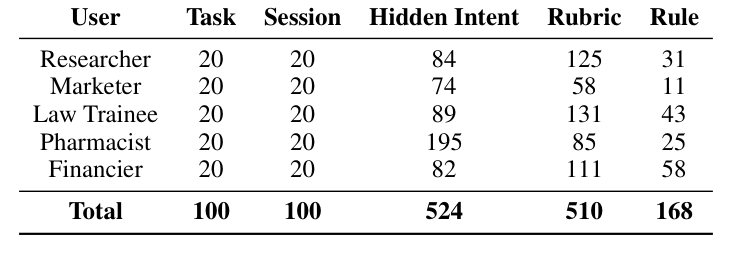
Table 2: Task and Grader Statistics.
Table 3: Benchmark tools grouped by application domain.
ABenchmark StatisticsA 基准统计
A.1 Task and Grader StatisticsA.1 任务与评分器统计
In this subsection, we summarize the task and grader statistics for the 100 tasks across all users, as shown in Tab. 2.
本小节汇总全部用户 100 个任务的任务与评分器统计，见表 2。
A.2 Tool and Skill StatisticsA.2 工具与技能统计
Tabs. 3 and 4 summarize the tool and skill inventory of the benchmark. In total, the benchmark contains 187 unique tools and 21 skills.
表 3 与表 4 汇总了本基准的工具与技能清单：基准共包含 187 个不同工具与 21 项技能。
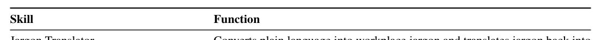
Table 4: Skill information of the benchmark.
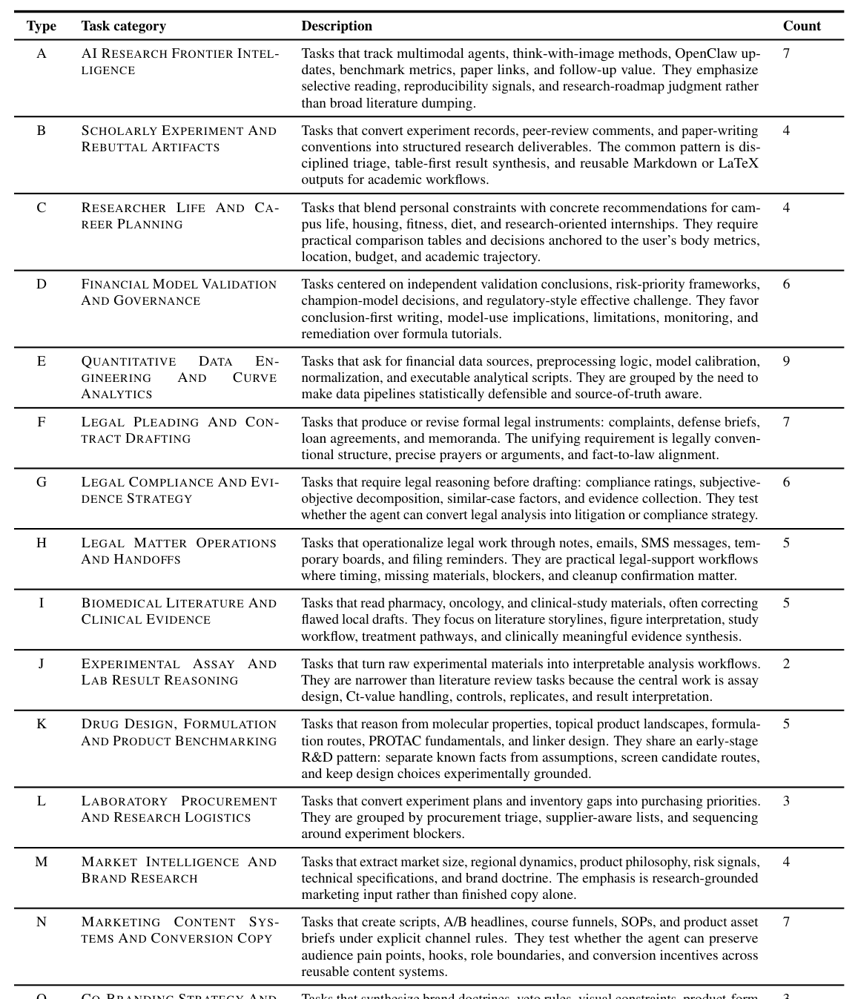
Table 5: Taxonomy of the 100 benchmark tasks across five user profiles.
A.3 Taxonomy of Benchmark TasksA.3 基准任务分类体系
In this subsection, we detail the categorization of the 100 benchmark tasks designed for our evaluation. To systematically assess the multimodal agents across diverse professional and daily scenarios, we group the tasks into 18 fine-grained categories. Rather than relying on broad topical divisions, this classification system strictly emphasizes the specific action intents, reasoning requirements, and underlying workflows inherent to each task. A comprehensive overview of these categories, along with their corresponding descriptions and covered task lists, is presented in Tab. 5.
本小节详细介绍为本次评测设计的 100 个基准任务的分类。为系统地评估多模态智能体在多样专业与日常场景中的表现，我们将任务划分为 18 个细粒度类别。这套分类体系不依赖宽泛的主题划分，而是严格强调每个任务固有的具体动作意图、推理要求与底层工作流。各类别的完整概览、对应描述及覆盖任务列表见表 5。
BUser Agent ProtocolB 用户智能体协议
B.1 OverviewB.1 概述
The user agent is instantiated with GPT-5.4 as the base model and simulates the user side of each session. It controls how hidden requirements are revealed during interaction. Given the current dialogue, the latest agent response, and the task-level hidden intents, it updates the intent tracking state and produces the next user message when the session should continue. This protocol separates user simulation from final task grading. Specifically, the user agent determines whether hidden intents have been proactively resolved or need to be revealed, while checklist-based graders evaluate whether the final artifacts satisfy the task requirements.
用户智能体以 GPT-5.4 为基础模型实例化，模拟每个会话中的用户一方，控制隐藏需求在交互中如何被揭示。给定当前对话、最新的智能体响应与任务级隐藏意图，它更新意图跟踪状态，并在会话应继续时生成下一条用户消息。该协议将用户模拟与最终任务评分分离：用户智能体判定隐藏意图是否已被主动化解或需要揭示，基于清单的评分器则评估最终工件是否满足任务要求。
To support stable trajectory-level evaluation, we decompose the user agent protocol into two stages rather than relying on a single free-form user simulator to both judge the agent response and generate the next message. The first stage checks whether the agent has already satisfied any hidden intents through its response, tool use, or workspace updates. The second stage determines whether the agent has asked a targeted clarification question and, if needed, generates the next user message. This design makes terminal intent assignment more explicit while preserving natural multi-turn interaction.
为支持稳定的轨迹级评测，我们将用户智能体协议分解为两个阶段，而非依赖单一的自由形式用户模拟器同时判断智能体响应并生成下一条消息。第一阶段检查智能体是否已通过响应、工具使用或工作区更新满足了某些隐藏意图；第二阶段判断智能体是否提出了有针对性的澄清性问题，并在需要时生成下一条用户消息。这一设计让终结意图赋值更加显式，同时保留自然的多轮交互。
B.2 Two-Stage Intent AssignmentB.2 两阶段意图赋值
At each turn, the user agent only considers hidden intents that have not yet received a terminal status. Once an intent is assigned completed, inferred, or provided, it is removed from subsequent tracking within the same session.
每一轮中，用户智能体只考虑尚未获得终结状态的隐藏意图。意图一旦被赋予 completed、inferred 或 provided，便在同一会话的后续跟踪中被移除。
Assignment is performed in two stages. In the first stage, the user agent checks whether the latest agent response has already satisfied one or more unresolved intents. Evidence may come from the response content, a tool call, or a newly created or modified artifact. If an intent is satisfied without being explicitly stated by the user, it is assigned completed. This stage has priority because it captures the strongest form of proactivity, where the agent directly acts on an unstated requirement rather than asking the user to provide it.
赋值分两个阶段进行。第一阶段，用户智能体检查最新的智能体响应是否已满足一个或多个未化解的意图；证据可能来自响应内容、一次工具调用，或新创建/修改的工件。若某个意图在未被用户明确言明的情况下得到满足，则被赋予 completed。这一阶段具有优先权，因为它捕捉主动性最强的形式：智能体直接针对未被言明的需求采取行动，而非要求用户提供。
Prompt – Completion Checking提示词 – 完成检查
## Assistant Response <assistant_message> {assistant_message}## 助手响应 <assistant_message> {assistant_message}
</assistant_message></assistant_message>
## Files Read Context Use these file contents as additional context for judging intent satisfaction. {files_context_xml}
## 文件读取上下文 将这些文件内容作为判断意图满足情况的附加上下文。{files_context_xml}
## Hidden Intent Status Snapshot Judge only the hidden intents listed here. {status_hidden_intents_xml}
## 隐藏意图状态快照 仅判断此处列出的隐藏意图。{status_hidden_intents_xml}
## Objective Decide whether the assistant response, together with the files-read context above, already reflects each listed hidden intent.
## 目标 判断助手响应连同上方的文件读取上下文，是否已经体现了每一条列出的隐藏意图。
## Evaluation Policy 1. Judge from the assistant response and the files-read context above. 2. Be strict and objective. The assistant must precisely and explicitly hit the hidden intent. 3. A hidden intent is satisfied only if the assistant provides specific, detailed explanations or concrete actions in the response. Vague or generic answers do not count. 4. Fully trust the assistant’s wording and the files-read context, but strictly evaluate the level of detail provided. 5. Do not call tools or check factual accuracy beyond the provided context. 6. YES means the response and context precisely address the hidden intent with specific details. 7. NO means the response and context do not precisely hit the intent, or lack specific details.
## 评估策略 1. 基于助手响应与上方的文件读取上下文进行判断。 2. 严格且客观：助手必须精确且明确地命中隐藏意图。 3. 只有当助手在响应中给出具体、详细的解释或具体行动时，隐藏意图才算被满足，模糊或泛泛的回答不计。 4. 完全信任助手的措辞与文件读取上下文，但严格评估细节的充分程度。 5. 不要调用工具，也不要在所提供上下文之外核查事实准确性。 6. YES 表示响应与上下文以具体细节精确处理了隐藏意图。 7. NO 表示响应与上下文未能精确命中该意图，或缺乏具体细节。
## Output Format Output only XML blocks in the following shape. <c1> <content> {hidden_intent_content}
## 输出格式 仅输出以下形状的 XML 块。<c1> <content> {hidden_intent_content}
</content> <decision></content> <decision>
YES or NO </decision> </c1>YES or NO </decision> </c1>
In the second stage, the user agent checks whether the latest agent response contains a clarification question. If the question directly targets one or more unresolved intents, those intents are assigned
第二阶段，用户智能体检查最新的智能体响应是否包含澄清性问题。若该问题直接针对一个或多个未化解的意图，这些意图便被赋予
inferred, and the user agent answers the corresponding missing requirements in the next message. A question is considered targeted only when it asks for information needed to resolve a specific hidden intent. Generic questions such as asking whether the user has any other preferences are not sufficient unless they clearly identify the missing requirement.
inferred 状态，用户智能体在下一条消息中补充相应的缺失需求。只有当问题询问的是化解某个特定隐藏意图所需的信息时，才视为有针对性；诸如“是否还有其他偏好”之类的泛泛问题并不足够，除非其明确指出缺失的需求。
If no targeted clarification question is found, the user agent selects one unresolved intent that is relevant to the current stage of the task and reveals the corresponding information in the next message. The selected intent is then assigned provided. This case reflects a weaker interaction pattern, where the user must supply missing information because the agent neither completed the intent nor elicited it through a focused question.
若未发现有针对性的澄清性问题，用户智能体会选择一个与任务当前阶段相关的未化解意图，并在下一条消息中揭示相应信息，该意图随即被赋予 provided。这一情形反映较弱的交互模式：智能体既未完成意图，也未通过聚焦的问题引出它，用户不得不自行补齐缺失信息。
Prompt – Clarification Checking提示词 – 澄清检查
## Assistant Response <assistant_message> {assistant_message}## 助手响应 <assistant_message> {assistant_message}
</assistant_message></assistant_message>
## Hidden Intents Still Not Provided Judge only the hidden intents listed here. {status_hidden_intents_xml}
## 尚未被提供的隐藏意图 仅判断此处列出的隐藏意图。{status_hidden_intents_xml}
## Objective Decide whether the assistant response contains a clear follow-up question that is specifically about each listed hidden intent.
## 目标 判断助手响应中是否包含明确针对每条所列隐藏意图的后续问题。
## Evaluation Policy 1. Judge from the assistant response. Consider all follow-up questions, requests, and action suggestions inside it, not only the last sentence. 2. YES means the assistant explicitly asks about that hidden intent, asks a very close confirmation question about it, or proposes concrete next steps that directly correspond to it. 3. NO means the question is missing, vague, generic, or does not clearly target that hidden intent. 4. Generic prompts such as “anything else?” or “do you want to add more?” must be NO. 5. A question must clearly get the point. Broad topic overlap is not enough.
## 评估策略 1. 基于助手响应判断：考虑其中的所有后续问题、请求与行动建议，而不只是最后一句。 2. YES 表示助手明确询问了该隐藏意图，或就其提出非常接近的确认性问题，或提出与之直接对应的具体下一步。 3. NO 表示问题缺失、模糊、泛泛，或未明确针对该隐藏意图。 4. 诸如“还有别的吗？”“还想补充什么？”之类的泛泛提示必须判 NO。 5. 问题必须切中要点，宽泛的主题重叠并不足够。
## Output Format Output only XML blocks in the following shape. <c1> <content> {hidden_intent_content}
## 输出格式 仅输出以下形状的 XML 块。<c1> <content> {hidden_intent_content}
</content> <decision></content> <decision>
YES or NO </decision> </c1>YES or NO </decision> </c1>
This two-stage procedure induces a priority order among terminal statuses. Direct satisfaction is assigned before targeted elicitation, and targeted elicitation is assigned before user-provided information. This order matches the proactivity score in Sec. 3.5, where both completed and inferred are treated as proactive behavior, while provided indicates that the user had to surface the requirement without sufficient agent initiative.
这一两阶段流程在终结状态之间确立了一个优先顺序：直接满足先于有针对性的引出，有针对性的引出先于用户提供的信息。该顺序与第 3.5 节的主动性得分一致：completed 与 inferred 均被视为主动行为，而 provided 则表明智能体主动性不足，用户不得不自行呈现需求。
B.3 Session TerminationB.3 会话终止
A session terminates after every hidden intent in I has received a terminal status and the agent has produced its final response. This rule provides a concrete stopping condition for the simulated interaction and avoids requiring the user agent to make a separate subjective judgment about whether the conversation has naturally ended. Once all hidden intents have been completed, inferred, or provided, the user agent has no remaining hidden requirement to reveal, and the session has reached the intended stopping point for proactivity evaluation.
当 I 中的每个隐藏意图都获得终结状态、且智能体产出最终响应后，会话终止。该规则为模拟交互提供了具体的停止条件，无需用户智能体就对话是否自然结束另行做出主观判断。一旦所有隐藏意图都已被 completed、inferred 或 provided，用户智能体便没有剩余的隐藏需求可揭示，会话即到达主动性评测的预期停止点。
This termination rule is aligned with the metric definition. Since PROC is computed from the partition of hidden intents into Icom, Iinf, and Ipro, the session ends only after all intents have been assigned to one of these sets. The final trajectory is then passed to checklist graders for completeness evaluation, which is independent of whether each intent was completed, inferred, or provided during interaction.
该终止规则与指标定义一致：由于 PROC 由隐藏意图在 Icom、Iinf 与 Ipro 上的划分计算而来，会话只有在所有意图都被归入其中之一后才结束。最终轨迹随后交由基于清单的评分器做完整性评估，这与每个意图在交互中是被完成、被引出还是被提供无关。
CDetailed Evaluation ProtocolC 详细评估协议
C.1 OverviewC.1 概述
We evaluate each completed trajectory along two axes, proactivity and completeness. Proactivity measures whether the agent resolves hidden intents through direct action or targeted elicitation, following the definition in Sec. 3.5. Completeness measures whether the task requirements are actually satisfied by the trajectory and produced artifacts. This separation is important because a conversation may appear natural while still failing to complete the task, and a task may eventually be completed only after the user reveals requirements that the agent did not proactively identify.
我们沿两个维度评测每条完成的轨迹：主动性与完整性。主动性衡量智能体是否通过直接行动或有针对性的引出化解了隐藏意图，遵循第 3.5 节的定义；完整性衡量任务要求是否实际被轨迹及产出的工件满足。这一区分很重要：一段对话可能看似自然却未能完成任务，而一个任务也可能要等到用户揭示出智能体未曾主动识别的需求之后才最终完成。
For each session, evaluation is performed over the full interaction trajectory. The trajectory includes user and agent messages, tool calls, tool results, and workspace changes when applicable. Proactivity is computed from the terminal status assignment over hidden intents. Completeness is computed
对每个会话，评测在整个交互轨迹上进行：轨迹包括用户与智能体消息、工具调用、工具结果，以及适用时的工作区变更。主动性由隐藏意图的终结状态赋值计算；完整性
from a checklist of verifiable criteria, using either LLM based rubric evaluation or rule based tool evaluation. These scores are then reported at the task level and averaged across repeated runs.
则由一份可验证标准的清单计算，采用基于 LLM 的量规评估或基于规则的工具评估。得分随后在任务层面报告，并在重复运行间取平均。
C.2 Proactivity EvaluationC.2 主动性评估
Proactivity follows the intent tracking procedure described in Sec. 3.4 and App. B. Each hidden intent is assigned one terminal status from {completed, inferred, provided} during the interaction. We use the resulting partition of hidden intents to compute PROC as defined in Sec. 3.5. When tasks form a dependency group, the relevant hidden intents from the dependent workflow are taken into account together. We do not introduce additional post hoc judgments for proactivity in this appendix, since the score is fully determined by the user agent protocol and the terminal status assignment.
主动性遵循第 3.4 节与附录 B 描述的意图跟踪流程：交互过程中，每个隐藏意图从 {completed, inferred, provided} 中获得一个终结状态，我们据此得到的隐藏意图划分、按第 3.5 节的定义计算 PROC。当任务构成依赖组时，依赖工作流中的相关隐藏意图被一并纳入。本附录不为主动性引入额外的事后判断——该得分完全由用户智能体协议与终结状态赋值决定。
C.3 Checklist Based Completeness EvaluationC.3 基于清单的完整性评估
Completeness is evaluated with task-specific checklists. Each checklist item describes a concrete criterion that should be satisfied by the trajectory or final artifacts. These criteria cover required files, generated outputs, filled fields, tool outcomes, formatting constraints, and other task obligations. Unlike hidden intents, which measure whether the agent proactively resolves unstated requirements, checklist items measure whether the task is ultimately completed.
完整性用任务特定的清单评估：每个清单项描述一条应由轨迹或最终工件满足的具体标准，覆盖必需文件、生成的输出、填写的字段、工具结果、格式约束及其他任务义务。与衡量智能体能否主动化解未言明需求的隐藏意图不同，清单项衡量的是任务最终是否被完成。
We evaluate checklist items with two complementary methods:
我们用两种互补的方法评估清单项：
• Rubric-based evaluation. Open-ended textual criteria are evaluated by an LLM rubric evaluator. The evaluator receives a rendered trace containing the interaction history and relevant task context, then assigns each criterion a strict YES or NO judgment. We map YES to 1 and NO to 0. • Rule-based verification. Structured criteria that require exact verification are evaluated by task- specific Python scripts. These scripts inspect the tool history and return binary scores for the corresponding checklist items. This is useful for cases where completion depends on exact tool outcomes, such as whether an order contains the correct product and quantity.
• 基于量规的评估。开放式的文本标准由 LLM 量规评估器评判：评估器接收一份包含交互历史与相关任务上下文的渲染轨迹，对每条标准给出严格的 YES 或 NO 判断，YES 映射为 1、NO 映射为 0。 • 基于规则的验证。需要精确验证的结构化标准由任务特定的 Python 脚本评估：脚本检查工具历史，为相应清单项返回二元分数。这适用于完成与否取决于精确工具结果的情形，如订单是否包含正确的商品与数量。
A task may combine both methods. LLM rubric evaluation handles criteria that require semantic judgment, while rule-based evaluation handles criteria that can be checked from structured tool evidence. The resulting binary judgments are merged into a single checklist before task-level aggregation, and the final completeness score is computed as the average over checklist items.
一个任务可以同时结合两种方法：LLM 量规评估处理需要语义判断的标准，基于规则的评估处理可从结构化工具证据中检查的标准。得到的二元判断在任务级聚合之前被合并为单一清单，最终完整性得分按清单项平均计算。
C.4 Tool RecordsC.4 工具记录
Some checklist criteria require evidence from tool calls and tool results. We therefore keep structured tool records as part of the trajectory. Each record contains the tool name, the call payload, and the returned result. The following example shows a simplified order inspection record from an Amazon task. The example is used only to illustrate the structure of tool evidence used by the evaluator.
某些清单标准需要来自工具调用与工具结果的证据，因此我们把结构化工具记录作为轨迹的一部分保留。每条记录包含工具名、调用载荷与返回结果。下面的示例展示了一个来自 Amazon 任务的简化订单检查记录，仅用于说明评估器所用工具证据的结构。
Example – Tool Call and Response
示例 – 工具调用与响应
C.5 LLM Rubric EvaluationC.5 LLM 量规评估
Text checklist criteria are evaluated by an LLM rubric evaluator. The evaluator receives a rendered trace containing the interaction history and selected task-relevant context. For each task, completeness is aggregated over the interaction, so a criterion is credited if the trajectory provides sufficient evidence that it has been satisfied during the session. When tool evidence is needed, we include only the tool calls or tool results that are relevant to the criterion being evaluated. These fields are selected during task construction by domain experts.
文本清单标准由 LLM 量规评估器评判：评估器接收一份包含交互历史与选定任务相关上下文的渲染轨迹。对每个任务，完整性在交互上聚合，只要轨迹提供了充分证据表明某条标准在会话中已被满足，该标准即被记为满足。当需要工具证据时，只纳入与被评估标准相关的工具调用或工具结果；这些字段在任务构建阶段由领域专家选定。
This selective context makes rubric evaluation more reliable and easier to audit. Full tool histories can be long, repetitive, and unrelated to a specific checklist item. Providing only relevant tool evidence keeps the evaluation prompt compact while preserving the information needed to decide whether the criterion is satisfied. The selected tool fields are appended to the rendered trace as structured context. The LLM rubric evaluator then judges each text checklist item from this trace and returns a strict YES or NO answer.
这种选择性上下文让量规评估更可靠、更易审计：完整的工具历史可能冗长、重复且与特定清单项无关，只提供相关工具证据既能保持评估提示的紧凑，又保留了判断标准是否被满足所需的信息。被选中的工具字段作为结构化上下文附加到渲染轨迹，LLM 量规评估器再据此对每个文本清单项进行判断，返回严格的 YES 或 NO。
Prompt – Checklist-based Rubric Evaluation提示词 – 基于清单的量规评估
## Full Hidden Intent These are all hidden intents for the current task. {hidden_intents_xml}
## 完整隐藏意图 这些是当前任务的全部隐藏意图。{hidden_intents_xml}
## Interaction History <history> {history}## 交互历史 <history> {history}
</history></history>
## Checklist Criteria {criteria_list}## 清单标准 {criteria_list}
## Objective You are a strict evaluator. For each checklist criterion, decide whether the interaction history clearly satisfies it.
## 目标 你是一名严格的评估者。对每条清单标准，判断交互历史是否清楚地满足了它。
## Scoring Rules 1. Use only evidence from the interaction history. 2. Score YES only when the criterion is clearly satisfied. 3. Score NO when evidence is missing, ambiguous, or contradicted. 4. Do not guess.
## 评分规则 1. 只使用来自交互历史的证据。 2. 仅当标准被清楚满足时才判 YES。 3. 当证据缺失、含糊或相互矛盾时判 NO。 4. 不要猜测。
## Output Format Output only XML blocks in the following shape. Keep each criterion text exactly the same as given. Each score must be YES or NO. <c1> <criterion> {criterion_text}
## 输出格式 仅输出以下形状的 XML 块。每条标准的文本必须与给定内容完全一致，每个分数必须是 YES 或 NO。<c1> <criterion> {criterion_text}
</criterion> <score></criterion> <score>
YES or NO </score> </c1>YES or NO </score> </c1>
C.6 Rule Based Tool ScoringC.6 基于规则的工具评分
Rule-based tool scoring is used when a checklist item requires exact verification over structured tool calls or tool results. This is useful for criteria where natural language evidence is not sufficient, such as whether the agent actually placed an order, submitted a form with the correct fields, or retrieved the expected record from an external system. For such criteria, we use task-specific Python scripts that inspect the tool history and return binary scores for the corresponding checklist items.
当某个清单项需要对结构化工具调用或工具结果做精确验证时，使用基于规则的工具评分。这对自然语言证据不足的标准尤为有用——例如智能体是否真正下了订单、是否以正确字段提交表单、是否从外部系统取回预期记录。对这类标准，我们用任务特定的 Python 脚本检查工具历史，为相应清单项返回二元分数。
This procedure is separate from the selected tool context used in LLM rubric evaluation. The rubric evaluator sees a rendered trace with only the task-relevant context selected for semantic judgment. In contrast, rule-based scoring inspects the full tool history for the turn. This separation allows the evaluation to combine flexible semantic judgment with exact checks over structured evidence.
这一流程与 LLM 量规评估中使用的选定工具上下文相互独立：量规评估器看到的渲染轨迹只包含为语义判断选定的任务相关上下文；基于规则的评分则检查该轮的完整工具历史。这一分离让评测得以将灵活的语义判断与对结构化证据的精确检查结合起来。
For example, in a shopping task, the agent may claim that it placed the correct order, but completeness should be determined from the actual order record rather than from the natural language response alone. A rule-based scorer can first recover the order identifier from a successful order placement call and then verify the product and quantity through a later order inspection call.
例如，在一个购物任务中，智能体可能声称自己下了正确的订单，但完整性应根据实际订单记录而非仅凭自然语言响应来判定：基于规则的评分器可先从一次成功的下单调用中恢复订单标识符，再通过后续的订单检查调用验证商品与数量。
Example – Rule Based Evaluator示例 – 基于规则的评估器
This example illustrates how rule-based evaluation complements LLM rubric evaluation. The LLM evaluator can assess open-ended textual criteria from the rendered trace, while the script verifies structured facts from the tool history. Both outputs are converted into binary checklist values and aggregated under the same completeness evaluation procedure.
该示例说明了基于规则的评估如何与 LLM 量规评估互补：LLM 评估器从渲染轨迹评估开放式文本标准，脚本则从工具历史验证结构化事实。两类输出都被转换为二元清单值，并在同一完整性评估流程下聚合。
DReproducibility and Runtime SettingsD 可复现性与运行时设置
Execution environment. All experiments were run on a Linux server with Ubuntu 24.04.1 LTS. The machine has two CPU sockets, with 16 physical cores per socket and 64 hardware threads in total. The server has 251 GiB of RAM and 1 TB of local storage. In practice, individual task runs used substantially less than 8 GB of memory, and the full project workspace, including task assets, traces, and intermediate outputs, required less than 32 GB of storage. Benchmark execution is containerized with Docker to keep the runtime environment consistent across models and users.
执行环境。所有实验在搭载 Ubuntu 24.04.1 LTS 的 Linux 服务器上运行：两个 CPU 插槽、每插槽 16 个物理核心、共 64 个硬件线程，251 GiB 内存与 1 TB 本地存储。实践中，单次任务运行的内存占用远低于 8 GB，完整项目工作区（含任务资产、轨迹与中间输出）的存储占用不足 32 GB。基准执行经 Docker 容器化，以保证跨模型、跨用户的运行时环境一致。
Agent scaffold and app environments. All evaluated models are run under the same agentic scaffold, adapted from Nanobot [11]† (MIT License). For tasks that require app-backed tools, we construct simulated app environments based on AppWorld [36]‡ (Apache-2.0 License). This setup keeps the interaction protocol, workspace access, and tool interface consistent across models while keeping the benchmark focus on proactive intent resolution rather than infrastructure differences.
智能体脚手架与应用环境。所有被评测模型均在同一智能体脚手架下运行，该脚手架改编自 Nanobot [11]†（MIT 许可证）。对需要应用工具支撑的任务，我们基于 AppWorld [36]‡（Apache-2.0 许可证）构建模拟应用环境。这一设定让交互协议、工作区访问与工具接口在模型间保持一致，同时使基准聚焦于主动意图化解而非基础设施差异。
Model access. The evaluated models are accessed through hosted model APIs and are all run under the same agent scaffold described above. Model-specific differences are therefore limited to the provider-side model behavior rather than local runtime configuration. API credentials and provider endpoints are configured outside the manuscript and are not embedded in the benchmark artifacts.
模型访问。被评测模型通过托管模型 API 访问，且均在上述同一智能体脚手架下运行，因此模型间差异仅限于提供商侧的模型行为，而非本地运行时配置。API 凭证与提供商端点在文稿之外配置，不嵌入基准工件。
ESocietal ImpactsE 社会影响
π-BENCH is intended to support safer and more reliable evaluation of proactive personal assistant agents before such systems are deployed in real workflows. By measuring whether agents can identify underspecified needs, ask targeted questions, and complete artifact-grounded tasks, the benchmark may help developers diagnose failures that would otherwise increase user effort or lead to incomplete outcomes. At the same time, proactive assistants raise important risks: an agent that infers too much may act beyond the user’s intent, expose or misuse private context, or make inappropriate decisions in sensitive domains. We therefore view π-BENCH as an evaluation resource rather than a deployment recommendation, and emphasize that real-world proactive agents should be paired with user control, privacy safeguards, transparent logging, and domain-specific review when tasks involve high-stakes personal, legal, medical, or financial information.
π-BENCH 旨在这类系统进入真实工作流之前，支持对主动式个人助理智能体更安全、更可靠的评测。通过衡量智能体能否识别欠明确的需求、提出有针对性的问题并完成扎根于工件的任务，该基准可帮助开发者诊断那些否则会增加用户负担或导致不完整结果的失败。与此同时，主动式助理也带来不容忽视的风险：推断过度的智能体可能越过用户意图行事、暴露或滥用私密上下文，甚至在敏感领域做出不当决策。因此，我们将 π-BENCH 视为评测资源而非部署建议，并强调：当任务涉及高风险的个人、法律、医疗或金融信息时，现实中的主动式智能体必须辅以用户控制、隐私保障、透明的日志记录与领域特定的审查。
FExperimentsF 实验
F.1 Reliability of Judgment Based EvaluationF.1 基于判断的评估的可靠性
Our main evaluation uses GPT-5.4 for two judgment based components. The first is rubric based checklist grading, which contributes to COMP. The second is terminal status assignment for hidden intents, which determines PROC. Since these two signals are central to π-BENCH, we audit whether the judgments are stable across human and model based reviewers.
我们的主评测在两个基于判断的组件上使用 GPT-5.4：一是计入 COMP 的基于量规的清单评分，二是决定 PROC 的隐藏意图终结状态赋值。这两个信号对 π-BENCH 至关重要，因此我们审查这些判断在人类与基于模型的审查者之间是否稳定。
Table 6: Disagreement rates for judgment based evaluation. We audit checklist grading for COMP and hidden intent status assignment for PROC. All values are percentages. Lower is better.
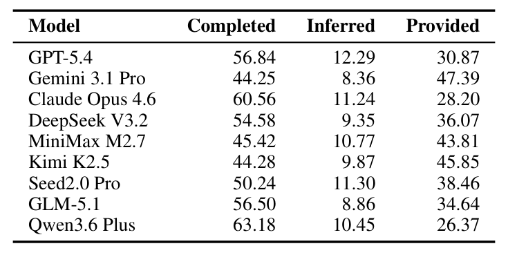
Table 7: Distribution of terminal hidden intent statuses.表 7 从意图层面诊断了隐藏意图在交互结束时如何被化解：completed 意图在用户未明确透露的情况下被满足；inferred 意图经由智能体有针对性的提问被引出；provided 意图则在没有此类提问的情况下由模拟用户提供。该分布与报告的主动性得分不同——后者在每条任务轨迹内计算，再跨任务与重复运行取平均。
We sample 120 task trajectories uniformly across evaluated models. For each trajectory, auditors inspect all checklist judgments and all hidden intent status assignments. The human audit uses three expert annotators and reports disagreement against the original evaluation after majority aggregation. The model audit uses Claude Opus 4.6, GPT-5.4, and Gemini 3.1 Pro. The GPT-5.4 audit is included as a separate judging pass to measure self consistency, while the other model audits test agreement with independent frontier judges. Tab. 6 reports the disagreement rate between the scoring run and each audit source.
我们在被评测模型间均匀采样 120 条任务轨迹；对每条轨迹，审查者检查全部清单判断与全部隐藏意图状态赋值。人类审查由三位专家标注者完成，报告多数聚合后与原始评测的分歧；模型审查使用 Claude Opus 4.6、GPT-5.4 与 Gemini 3.1 Pro——GPT-5.4 审查作为独立评判轮次纳入以测量自一致性，另外两个模型的审查检验与独立前沿评判者的一致性。表 6 报告评分运行与各审查来源之间的分歧率。
The audits show strong agreement with the scoring run on both axes. Human experts disagree with 2.66% of checklist judgments and 1.48% of hidden intent assignments, and the frontier model audits show a similar pattern. Disagreement stays below 3.6% for checklists and below 2.1% for hidden intents. This consistency suggests that the judgment based components of our evaluation are reliable and that the reported PROC and COMP scores are unlikely to be driven by evaluator noise. Hidden intent status is slightly more stable, likely because it follows explicit terminal categories in the user agent protocol. Checklist grading leaves more room for variation because it may require reading longer artifacts and matching them against task specific evidence. Overall, the audit supports the intended separation in π-BENCH. PROC captures whether agents resolve unstated user needs, while COMP captures whether they complete the requested workflow.
审查结果显示，两个维度上都与评分运行高度一致：人类专家对 2.66% 的清单判断和 1.48% 的隐藏意图赋值持异议，前沿模型审查也呈类似模式——清单分歧保持在 3.6% 以下，隐藏意图分歧保持在 2.1% 以下。这种一致性表明评测中基于判断的组件是可靠的，报告的 PROC 与 COMP 分数不太可能由评估器噪声驱动。隐藏意图状态略更稳定，可能因为它遵循用户智能体协议中明确的终结类别；清单评分则留有更多波动空间，因为它可能需要阅读更长的工件并与任务特定证据比对。总体而言，审查支持 π-BENCH 预期的区分：PROC 捕捉智能体能否化解未言明的用户需求，COMP 捕捉其能否完成所请求的工作流。
F.2 Terminal Status of Hidden IntentsF.2 隐藏意图的终结状态
The main variation comes from direct completion rather than targeted elicitation. Qwen3.6 Plus has the highest completed rate at 63.18, followed by Claude Opus 4.6 at 60.56 and GPT-5.4 at 56.84. These models also have the lowest provided rates, at 26.37, 28.20, and 30.87. In contrast, Gemini 3.1 Pro, Kimi K2.5, and MiniMax M2.7 leave more hidden intents to be supplied by the user, with provided rates of 47.39, 45.85, and 43.81. Inferred rates remain low and tightly clustered across models, ranging from 8.36 to 12.29, which suggests that current models more often either resolve hidden requirements directly or wait for user disclosure rather than eliciting them through focused questions.
主要变化来自直接完成而非有针对性的引出：Qwen3.6 Plus 的 completed 率最高（63.18），其次为 Claude Opus 4.6（60.56）与 GPT-5.4（56.84），其 provided 率也最低，分别为 26.37、28.20 与 30.87。相比之下，Gemini 3.1 Pro、Kimi K2.5 与 MiniMax M2.7 留给用户提供的隐藏意图更多，provided 率分别为 47.39、45.85 与 43.81。各模型的 inferred 率均偏低且高度聚集（8.36 至 12.29），说明当前模型更倾向于直接化解隐藏需求或等待用户披露，而非通过聚焦的问题加以引出。
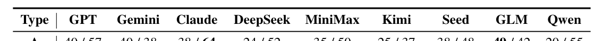
Table 8: Performance by task workflow type. Each cell reports PROC / COMP in percentages. Bold and underline mark the best and second-best scores within each row and metric, including ties. Model names are abbreviated and full names are given in Sec. 4.1. Type labels follow Tab. 5.
A 40 / 57 40 / 38 38 / 64 24 / 52 35 / 50 25 / 37 38 / 48 49 / 42 20 / 55 B 55 / 69 42 / 53 62 / 73 20 / 71 30 / 67 31 / 80 28 / 39 30 / 70 46 / 71 C 30 / 69 46 / 86 42 / 92 23 / 86 30 / 86 20 / 83 46 / 88 38 / 67 40 / 83 D 75 / 61 67 / 35 65 / 39 59 / 39 57 / 53 47 / 45 56 / 35 75 / 42 78 / 46 E 76 / 63 49 / 56 75 / 78 52 / 53 49 / 63 36 / 54 57 / 52 60 / 67 74 / 59 F 67 / 44 61 / 46 60 / 40 36 / 26 44 / 31 40 / 37 51 / 25 56 / 41 56 / 38 G 61 / 76 61 / 43 34 / 63 22 / 67 18 / 68 36 / 69 39 / 41 43 / 59 41 / 78 H 39 / 85 31 / 88 40 / 87 36 / 79 44 / 78 36 / 82 41 / 80 36 / 89 40 / 89 I 83 / 65 80 / 61 90 / 65 80 / 50 84 / 59 73 / 78 77 / 67 84 / 73 83 / 73 J 69 / 56 61 / 44 78 / 33 72 / 52 80 / 41 61 / 48 80 / 33 67 / 52 76 / 37 K 78 / 74 83 / 81 93 / 65 83 / 62 85 / 69 82 / 67 87 / 64 84 / 63 89 / 67 L 72 / 81 68 / 75 77 / 83 81 / 72 77 / 75 67 / 83 81 / 83 68 / 81 79 / 72 M 75 / 93 63 / 93 75 / 100 50 / 100 42 / 93 42 / 100 67 / 100 67 / 93 42 / 93 N 78 / 65 69 / 55 80 / 71 75 / 53 78 / 60 50 / 70 76 / 36 64 / 75 81 / 65 O 90 / 44 69 / 67 88 / 75 80 / 61 85 / 67 54 / 78 82 / 56 85 / 72 82 / 44 P 79 / 81 49 / 75 54 / 89 62 / 69 46 / 70 23 / 29 52 / 40 34 / 51 62 / 76 Q 61 / 75 50 / 69 67 / 74 56 / 69 58 / 61 35 / 66 65 / 66 62 / 77 70 / 80 R 72 / 68 58 / 72 69 / 70 64 / 62 57 / 64 45 / 64 55 / 60 60 / 70 71 / 65
A 40 / 57 40 / 38 38 / 64 24 / 52 35 / 50 25 / 37 38 / 48 49 / 42 20 / 55 B 55 / 69 42 / 53 62 / 73 20 / 71 30 / 67 31 / 80 28 / 39 30 / 70 46 / 71 C 30 / 69 46 / 86 42 / 92 23 / 86 30 / 86 20 / 83 46 / 88 38 / 67 40 / 83 D 75 / 61 67 / 35 65 / 39 59 / 39 57 / 53 47 / 45 56 / 35 75 / 42 78 / 46 E 76 / 63 49 / 56 75 / 78 52 / 53 49 / 63 36 / 54 57 / 52 60 / 67 74 / 59 F 67 / 44 61 / 46 60 / 40 36 / 26 44 / 31 40 / 37 51 / 25 56 / 41 56 / 38 G 61 / 76 61 / 43 34 / 63 22 / 67 18 / 68 36 / 69 39 / 41 43 / 59 41 / 78 H 39 / 85 31 / 88 40 / 87 36 / 79 44 / 78 36 / 82 41 / 80 36 / 89 40 / 89 I 83 / 65 80 / 61 90 / 65 80 / 50 84 / 59 73 / 78 77 / 67 84 / 73 83 / 73 J 69 / 56 61 / 44 78 / 33 72 / 52 80 / 41 61 / 48 80 / 33 67 / 52 76 / 37 K 78 / 74 83 / 81 93 / 65 83 / 62 85 / 69 82 / 67 87 / 64 84 / 63 89 / 67 L 72 / 81 68 / 75 77 / 83 81 / 72 77 / 75 67 / 83 81 / 83 68 / 81 79 / 72 M 75 / 93 63 / 93 75 / 100 50 / 100 42 / 93 42 / 100 67 / 100 67 / 93 42 / 93 N 78 / 65 69 / 55 80 / 71 75 / 53 78 / 60 50 / 70 76 / 36 64 / 75 81 / 65 O 90 / 44 69 / 67 88 / 75 80 / 61 85 / 67 54 / 78 82 / 56 85 / 72 82 / 44 P 79 / 81 49 / 75 54 / 89 62 / 69 46 / 70 23 / 29 52 / 40 34 / 51 62 / 76 Q 61 / 75 50 / 69 67 / 74 56 / 69 58 / 61 35 / 66 65 / 66 62 / 77 70 / 80 R 72 / 68 58 / 72 69 / 70 64 / 62 57 / 64 45 / 64 55 / 60 60 / 70 71 / 65
F.3 Task-Type Breakdown of PerformanceF.3 按任务类型的性能分解
Tab. 8 provides a task-type diagnostic of how COMP and PROC separate across workflow structures. Research-centered workflows (A–C) and legal matter operations and handoffs (H) show relatively high COMP but lower PROC, suggesting that agents can often produce the final deliverable once requirements are explicit, while remaining weaker at identifying latent goals, missing materials, and operational blockers earlier in the workflow. Drug design, formulation, and product benchmarking (K) shows the opposite pattern, with higher PROC than COMP; here, hidden intents are often grounded in concrete scientific constraints such as assumptions, candidate routes, and experimental evidence. Consumer selection, commerce, and media actions (Q) are more completion-oriented, but their lower PROC indicates that visible task completion does not fully capture recovery of latent preferences. Tool-mediated administrative workflows (R) are more balanced, yet still show that the two metrics capture distinct aspects of performance.
表 8 从任务类型层面诊断了 COMP 与 PROC 如何随工作流结构而分化：以研究为中心的工作流（A–C）与法律事务操作及移交（H）表现出较高的 COMP 与较低的 PROC，说明一旦需求明确，智能体往往能产出最终交付物，但在工作流早期识别潜在目标、缺失材料与操作阻塞点方面仍较弱。药物设计、配方与产品基准测试（K）则相反，PROC 高于 COMP——其隐藏意图多扎根于具体科学约束，如假设、候选路线与实验证据。消费选择、商务与媒体操作（Q）更偏完成导向，但较低的 PROC 表明可见的任务完成并不足以反映潜在偏好的恢复。以工具为媒介的行政工作流（R）较为均衡，但仍显示两个指标捕捉的是性能的不同侧面。
Model-level trends further support this separation. GPT-5.4 attains the strongest average PROC and performs well on legal drafting (F), crisis communication (P), and administrative workflows (R), while Claude Opus 4.6 achieves the strongest average COMP and remains competitive on research- oriented completion (A–C). Qwen3.6 Plus shows comparatively stable performance across both metrics. Overall, these results indicate that workflow structure shapes which capabilities are stressed, and that COMP and PROC provide complementary views of model behavior.
模型层面的趋势进一步支持这一区分：GPT-5.4 取得最强的平均 PROC，在法律文书起草（F）、危机沟通（P）与行政工作流（R）上表现突出；Claude Opus 4.6 取得最强的平均 COMP，在面向研究的完成任务（A–C）上保持竞争力；Qwen3.6 Plus 在两个指标上均相对稳定。总体来看，工作流结构决定了哪些能力受到考验，COMP 与 PROC 则为模型行为提供了互补的视角。
F.4 Failure AnalysisF.4 失败分析
This section summarizes common failure patterns where agents either fail to satisfy checklist require- ments or fail to proactively resolve hidden intents. These two signals capture different aspects of failure: checklist items measure task completion, while hidden intents measure whether requirements are resolved proactively rather than supplied by the user. We focus on broad, recurring behaviors rather than task-specific corner cases, and provide concrete examples in the case studies in App. J.
本节总结常见的失败模式：智能体要么未能满足清单要求，要么未能主动化解隐藏意图。这两个信号捕捉失败的不同侧面——清单项衡量任务完成，隐藏意图衡量需求是被主动化解还是由用户提供。我们关注宽泛且反复出现的行为而非任务特定的边角案例，具体例子见附录 J 的案例研究。
Ignoring recoverable prior context. Some agents treat the current user message as a standalone request even when the task depends on information established in earlier sessions. This leads to missed hidden intents or incorrect final artifacts, as shown in the Researcher dependency failure in Fig. 21 and the meal-planning contrast in Fig. 9.
忽视可恢复的先前上下文。有些智能体把当前用户消息当作独立请求处理，即便任务依赖于此前会话中确立的信息。这会导致隐藏意图被遗漏或最终工件出错，如图 21 的 Researcher 依赖失败与图 9 的膳食规划对照所示。
Completing the visible request while missing hidden requirements. Agents often produce a plausible answer for the explicit request but leave implicit preferences, formatting constraints, or task-specific requirements unresolved until the user states them. Fig. 7 illustrates this pattern through several hidden intents marked as user-provided rather than agent-completed, and Fig. 11 shows that even a response with high checklist completeness can still rely on user-provided hidden requirements.
完成可见请求却遗漏隐藏需求。智能体往往对显式请求给出看似合理的回答，却把隐含偏好、格式约束或任务特定要求搁置到用户开口为止。图 7 通过若干被标记为 user-provided 而非 agent-completed 的隐藏意图展示了这一模式；图 11 则表明，即便是清单完整性很高的响应，仍可能依赖用户提供的隐藏需求。
Failing to ask targeted clarifications. When information is genuinely missing, clarification is useful only if it targets the specific requirement needed to complete the task. The targeted-followup successes in Fig. 13 and Fig. 15 serve as positive contrasts: weaker trajectories instead rely on repeated user intervention before hidden requirements are surfaced.
未能提出有针对性的澄清。当信息确实缺失时，澄清只有在针对完成任务所需的具体需求时才有用。图 13 与图 15 中有针对性追问的成功案例构成正面对照：较弱的轨迹则反复依赖用户干预，隐藏需求才得以浮现。
Using tools without verifying the required artifact. Some failures occur after the agent invokes relevant tools but does not verify that the produced artifact contains the required content or that the final state matches the checklist. The Law Trainee comparison in Fig. 18 shows this gap: the agent uses SMS and Todoist tools, but the final trace does not preserve the required handover details or reminder checks.
使用工具却未验证所需工件。有些失败发生在智能体调用相关工具之后，却未验证产出工件是否包含所需内容、最终状态是否符合清单。图 18 的 Law Trainee 对比展示了这一差距：智能体使用了 SMS 与 Todoist 工具，最终轨迹却没有保留所需的交接细节或提醒检查。
GTask FormatG 任务格式
Each task is stored as a structured configuration that specifies the user-facing request, latent require- ments, evaluation objectives, and metadata. The example below shows a survey-paper task, where earlier tasks in the same group may give the agent opportunities to infer the hidden intents needed for this final task. Task-specific names, links, and sensitive details are anonymized.
每个任务以结构化配置存储，指定面向用户的请求、潜在需求、评测目标与元数据。下面的示例是一个综述论文任务：同一组中更早的任务为智能体提供了推断本最终任务所需隐藏意图的机会。任务特定的名称、链接与敏感细节均已匿名化。
Example Task Format示例任务格式
HDiscussionH 讨论
H.1 Metric RelationshipH.1 指标关系
Proactivity and completeness are related but intentionally separated. In real user-agent interaction, a final outcome may improve either because the agent proactively identifies hidden requirements or because the user eventually spells them out. π-BENCH follows the latter interaction to exhaustion. The simulated user continues until every hidden intent has been completed, elicited, or explicitly provided. Thus, the final trajectory contains the complete set of user requirements, either through the agent’s own initiative or through oracle-like user provision. Under this protocol, PROC measures who drives requirement discovery, while COMP measures whether the agent converts the resulting trajectory into correct artifacts and decisions. The two scores therefore need not move together. A reactive agent can obtain high COMP after receiving many user-provided intents, while a proactive agent can still lose COMP by mishandling files, tools, formats, or downstream constraints. This separation lets us analyze the trade-off between surfacing latent requirements and completing the final workflow.
主动性与完整性相关，但被有意区分开。在真实的用户-智能体交互中，最终结果的改善既可能因为智能体主动识别了隐藏需求，也可能因为用户最终将其言明。π-BENCH 让后一种交互进行到底：模拟用户持续交互，直到每个隐藏意图都被完成、引出或明确提供。因此，最终轨迹包含完整的用户需求集合——或出自智能体自身的主动性，或出自类似先知式的用户提供。在该协议下，PROC 衡量由谁驱动需求发现，COMP 衡量智能体能否把由此得到的轨迹转化为正确的工件与决策。两个分数因此不必同向变动：被动型智能体在收到大量用户提供的意图后可以获得较高的 COMP，主动型智能体也可能因处理文件、工具、格式或下游约束不当而损失 COMP。这一区分使我们能够分析“呈现潜在需求”与“完成最终工作流”之间的权衡。
H.2 Hidden Intents and ChecklistsH.2 隐藏意图与清单
Hidden intents and checklists serve different roles in our benchmark.
隐藏意图与清单在本基准中承担不同的角色。
Hidden intents. Hidden intents describe latent requirements that are not stated in the initial request but should guide the agent’s behavior during interaction. They capture what a proactive assistant should infer, ask about, or act on before the user explicitly provides the information. Such intents may involve user preferences, task constraints, output conventions, or cross-session dependencies. Therefore, hidden intents are used to evaluate how the agent handles underspecification and whether it reduces the need for user intervention.
隐藏意图。隐藏意图描述初始请求中未言明、但应指导智能体交互行为的潜在需求，捕捉主动式助理在用户明确提供信息之前应当推断、询问或据以行动的内容。这类意图可能涉及用户偏好、任务约束、输出规范或跨会话依赖。因此，隐藏意图用于评估智能体如何处理欠明确性，以及它是否降低了用户干预的必要。
Checklists. Checklists, in contrast, define verifiable criteria for task completion. They specify what must be true of the final trajectory or produced artifacts, such as whether a required file is created, whether an output follows the requested format, whether a tool action succeeds, or whether a generated artifact contains the necessary content. A checklist item may depend on a hidden intent, but it is evaluated only as an outcome requirement. This separation lets us distinguish proactive behavior from final correctness. An agent may complete a task after the user provides all missing requirements, leading to high completeness but lower proactivity. Conversely, an agent may correctly identify hidden intents but still fail to satisfy some concrete checklist items, leading to high proactivity but lower completeness.
清单。与之相对，清单为任务完成定义可验证的标准：它们规定最终轨迹或产出工件必须满足什么——必需文件是否被创建、输出是否符合要求的格式、工具操作是否成功、生成的工件是否包含必要内容。清单项可能依赖某个隐藏意图，但只作为结果要求被评估。这一区分使我们得以把主动行为与最终正确性分开：智能体可能在用户提供全部缺失需求后才完成任务，得到高完整性但较低的主动性；反之，智能体可能正确识别了隐藏意图，却仍未能满足某些具体清单项，得到高主动性但较低的完整性。
IBenchmark Construction and AnnotationI 基准构建与标注
I.1 Task Sources and Workflow CollectionI.1 任务来源与工作流收集
Workflow sources. Tasks are derived from realistic workflows associated with the five user roles in π-BENCH: researcher, marketer, law trainee, pharmacist, and financier. For each role, we first collect representative work routines, common deliverables, and supporting materials from domain experts and public task patterns. These sources cover both professional work and everyday knowledge work, such as experiment analysis, paper writing, content planning, document review, literature organization, financial reconciliation, and report generation.
工作流来源。任务源自 π-BENCH 中五个用户角色相关联的真实工作流：研究员、市场营销人员、法律实习生、药剂师与金融从业者。对每个角色，我们首先从领域专家与公开任务模式中收集有代表性的工作惯例、常见交付物与配套材料，覆盖专业工作与日常知识工作——如实验分析、论文写作、内容规划、文档审阅、文献整理、财务对账与报告生成。
Selection criteria. During collection, we focus on workflows that are artifact-centric and naturally require interaction. We also require the workflow to contain realistic underspecification. In other words, the task should not be fully determined by the first user message. Instead, correct completion should depend on constraints, preferences, prior decisions, or workspace context that the agent needs to recover through proactive behavior.
筛选标准。收集过程中，我们聚焦以工件为中心、天然需要交互的工作流，并要求工作流包含真实的欠明确性：换言之，任务不应由第一条用户消息完全决定，正确的完成应取决于智能体需要通过主动行为恢复的约束、偏好、先前决策或工作区上下文。
Data sanitization. We do not directly use private or sensitive real-world data. When a workflow is inspired by actual work practice, annotators rewrite and normalize the materials into synthetic but realistic task instances. This includes replacing private names, removing sensitive details, simplifying irrelevant background, and ensuring that all required information can be accessed through the provided workspace, memory, or interaction protocol.
数据净化。我们不直接使用私密或敏感的真实数据：当某个工作流受真实工作实践启发时，标注者会将材料改写并归一化为合成但逼真的任务实例——替换私密姓名、移除敏感细节、简化无关背景，并确保所有必需信息都能通过提供的工作区、记忆或交互协议获得。
I.2 Task Construction ProcedureI.2 任务构建流程
Task goal selection. For each candidate workflow, annotators first define a task goal that is realistic, checkable, and well-scoped. The goal should reflect a plausible need of the corresponding user role, cover a meaningful part of the workflow, and admit clear evidence for whether the agent has completed it. We avoid goals that are either too narrow to require interaction or too broad to support reliable evaluation.
任务目标选择。对每个候选工作流，标注者首先定义一个真实、可检验且边界清晰的任务目标：目标应反映对应用户角色的合理需求，覆盖工作流中有意义的部分，并能为“智能体是否完成”提供明确证据。我们避免过窄（无需交互）或过宽（难以可靠评测）的目标。
Task specification. Annotators then convert the workflow into a concrete task specification. This process includes:
任务规约。标注者随后把工作流转化为具体的任务规约，该过程包括：
• Decide what information should appear in the initial request and what information should remain implicit as hidden intents. • Prepare the workspace state and supporting materials, such as input files, prior artifacts, structured records, or tool-accessible information. • Specify cross-session dependencies when earlier decisions, files, or user preferences should influence the current session.
• 决定哪些信息应出现在初始请求中，哪些应作为隐藏意图保持隐含。 • 准备工作区状态与配套材料，如输入文件、先前工件、结构化记录或可通过工具访问的信息。 • 当先前决策、文件或用户偏好应影响当前会话时，指定跨会话依赖。
The initial request must be underspecified enough to test proactivity, while still being concrete enough for the agent to begin useful work.
初始请求必须欠明确到足以检验主动性，同时仍足够具体，让智能体能着手开展有用的工作。
Intent and checklist annotation. Annotators next define the hidden intents and checklist items. Hidden intents capture latent requirements that should affect the agent’s behavior during the interac- tion, such as constraints, preferences, output conventions, or dependencies on prior context. Checklist items capture final completion requirements that can be verified from the trajectory, produced artifacts, or tool records.
意图与清单标注。标注者接下来定义隐藏意图与清单项：隐藏意图捕捉应当影响智能体交互行为的潜在需求，如约束、偏好、输出规范或对先前上下文的依赖；清单项捕捉可从轨迹、产出工件或工具记录中验证的最终完成要求。
Feasibility validation. After annotation, annotators validate each task before inclusion in the benchmark. This step checks whether the task is solvable with the provided context, whether the required tools and files are correctly connected, and whether the evaluation criteria can be applied reliably. The validation process includes:
可行性验证。标注完成后，标注者在任务纳入基准之前对其进行验证：检查任务在给定上下文下是否可解、所需工具与文件是否正确连接、评测标准能否被可靠应用。验证流程包括：
• Construct a reference workflow that describes a plausible completion path using the available workspace, tools, and interaction protocol. • Create expected artifacts when the task requires concrete outputs, such as documents, tables, code files, or structured records.
• 构建一个参考工作流，描述使用现有工作区、工具与交互协议的合理完成路径。 • 当任务要求具体输出（如文档、表格、代码文件或结构化记录）时，创建预期工件。
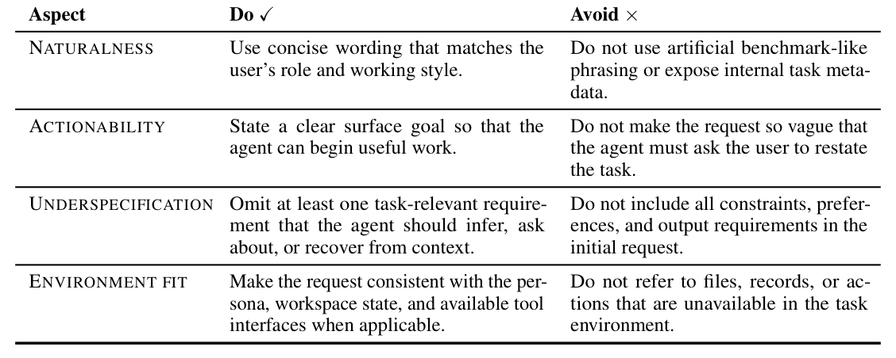
Table 9: Annotation guidelines for initial requests.
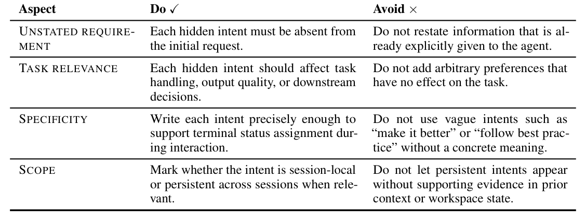
Table 10: Annotation guidelines for hidden intents.
• Bind required tools, input files, and workspace paths to ensure that the agent can access the information needed for completion. • Run pilot executions to identify missing context, broken tool paths, unclear instructions, unstable graders, or checklist items that are difficult to judge.
• 绑定所需的工具、输入文件与工作区路径，确保智能体能够访问完成所需的信息。 • 运行试点执行，以发现缺失上下文、断裂的工具路径、不清晰的指令、不稳定的评分器，或难以判断的清单项。
Tasks are revised or removed when validation reveals ambiguity or infeasibility. Revisions may include rewriting the initial request, refining hidden intents, splitting checklist items, adding missing workspace context, or adjusting graders for more stable verification.
当验证发现歧义或不可行时，任务会被修订或移除。修订可能包括改写初始请求、细化隐藏意图、拆分清单项、补充缺失的工作区上下文，或调整评分器以获得更稳定的验证。
I.3 Annotation GuidelinesI.3 标注指南
Initial requests. The initial request defines the user-facing starting point of a session. Annotators write it to be natural and actionable, while deliberately leaving some task-relevant requirements unstated so that proactive behavior can be evaluated. Tab. 9 summarizes the main annotation rules.
初始请求。初始请求定义会话中面向用户的起点。标注者将其写得自然且可执行，同时有意遗漏某些任务相关需求，以便评测主动行为。表 9 汇总了主要标注规则。
Hidden intents. Hidden intents specify unstated requirements that should shape the agent’s behavior during interaction. Annotators use them to define what a proactive assistant should complete directly or elicit through a targeted question. Tab. 10 summarizes the main rules.
隐藏意图。隐藏意图规定应在交互中影响智能体行为的未言明需求。标注者以之定义主动式助理应当直接完成、或通过有针对性的问题引出的内容。表 10 汇总了主要规则。
Checklists and graders. Checklist items define verifiable outcome criteria for completeness evaluation. Annotators write them separately from hidden intents so that proactive intent resolution and final task completion can be measured independently. Tab. 11 summarizes the main rules.
清单与评分器。清单项为完整性评测定义可验证的结果标准。标注者将其与隐藏意图分开撰写，使主动意图化解与最终任务完成可以被独立测量。表 11 汇总了主要规则。
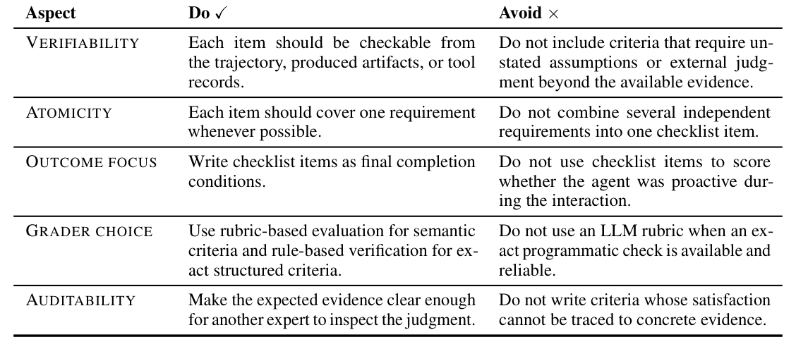
Table 11: Annotation guidelines for checklist items and grader assignment.
I.4 Quality ControlI.4 质量控制
Before inclusion in the final benchmark, each task undergoes iterative checks and revisions. Anno- tators inspect the task package for leakage and recoverability, ensuring that hidden intents are not directly exposed in the initial request while still being recoverable from prior sessions, workspace artifacts, memory, tool results, or targeted clarification. They also run pilot executions to detect setup issues, including missing files, invalid tool bindings, broken workspace paths, and infeasible task flows. Finally, they validate the evaluation resources by checking that rubric-based criteria can be judged from the selected evidence and that rule-based graders behave correctly on expected cases. Tasks are revised or removed when these checks reveal ambiguity, infeasibility, or unstable evaluation.
在纳入最终基准之前，每个任务都要经过迭代检查与修订。标注者检查任务包的泄漏与可恢复性，确保隐藏意图不在初始请求中直接暴露，同时仍可从先前会话、工作区工件、记忆、工具结果或有针对性的澄清中恢复；还运行试点执行以发现设置问题，包括缺失文件、无效工具绑定、断裂的工作区路径与不可行的任务流；最后，通过检查基于量规的标准能否从选定证据中判断、基于规则的评分器在预期案例上是否表现正确，来验证评测资源。当这些检查发现歧义、不可行或不稳定的评测时，任务会被修订或移除。
JCase StudyJ 案例研究
J.1 Hidden IntentsJ.1 隐藏意图
Failure case: Researcher – Claude 4.6 Opus. Fig. 6 and Fig. 7 show a representative hidden-intent case from the Researcher user episode evaluated with Claude 4.6 Opus. The session begins from an environment-triggered paper recommendation feed, where the relevant requirement is not stated as a direct user instruction. The agent first handles the feed as a broad recommendation task, and only later focuses on the OpenClaw-related subset after the user explicitly asks for it. The key signal is the hidden-intent assignment: several intents are marked as provided rather than completed or
失败案例：Researcher – Claude 4.6 Opus。图 6 与图 7 展示了一个来自 Researcher 用户情景、以 Claude 4.6 Opus 评测的代表性隐藏意图案例。会话始于一个环境触发的论文推荐信息流，相关需求并未作为直接的用户指令给出。智能体起初把该信息流当作宽泛的推荐任务处理，直到用户明确要求后才聚焦于与 OpenClaw 相关的子集。关键信号在于隐藏意图的赋值：若干意图被标记为 provided 而非 completed 或
inferred, indicating that the user had to surface requirements that the agent did not proactively resolve. Although the final trajectory has moderate completeness, this case mainly illustrates weak proactive intent resolution under an underspecified trigger.
inferred，表明用户不得不自行呈现智能体未曾主动化解的需求。尽管最终轨迹具有中等完整性，该案例主要说明在欠明确的触发条件下，智能体的主动意图化解较为薄弱。
Contrast case: Researcher – DeepSeek V3.2 and Claude 4.6 Opus. Fig. 8 and Fig. 9 show the DeepSeek V3.2 trace, while Fig. 10 and Fig. 11 show the Claude 4.6 Opus trace for the same Researcher meal-planning task. Both runs receive the same initial request, which explicitly mentions only a one-week meal plan and the RMB 20–30 price constraint, while the user’s body profile, macro accounting, table structure, and Plan B requirements remain hidden but recoverable from prior context. We focus on the first assistant turn because it occurs before the user reveals any hidden requirements and therefore best isolates proactive recovery from visible-request following. DeepSeek V3.2 mostly follows the visible budget and availability cue in this first response; although it recognizes campus-accessible food options, it does not recover the prior-session body profile, table preference, per-meal macro requirement, or Plan B preference, so the user has to reveal several requirements across later turns. Claude 4.6 Opus captures more task structure immediately: it goes beyond the visible price constraint by imposing a readable table, listing concrete foods for each day and meal, and grounding choices in campus or nearby meal availability. However, Claude still requires later user turns for macro totals, per-meal P/F/C values, and fallback meals. The contrast is a stronger-versus-weaker proactivity comparison rather than a binary success-failure case: both trajectories improve after user intervention, but their scores differ according to how much hidden intent is resolved before the user supplies it.
对照案例：Researcher – DeepSeek V3.2 与 Claude 4.6 Opus。图 8 与图 9 展示 DeepSeek V3.2 的轨迹，图 10 与图 11 展示 Claude 4.6 Opus 在同一 Researcher 膳食规划任务上的轨迹。两次运行收到相同的初始请求——其中只明确提到一周膳食计划与 20–30 元人民币的价格约束，而用户的身体档案、宏量营养核算、表格结构与 Plan B 需求保持隐藏，但可从先前上下文中恢复。我们聚焦第一个助手回合：它发生在用户揭示任何隐藏需求之前，最能将主动恢复与对可见请求的遵循区分开。DeepSeek V3.2 在首个响应中大多只跟随可见的预算与可用性线索；虽识别出校内可就餐的选择，却未恢复先前会话中的身体档案、表格偏好、每餐宏量营养要求或 Plan B 偏好，用户因此不得不在后续回合中揭示多项需求。Claude 4.6 Opus 则立刻捕捉到更多任务结构：它超越可见的价格约束，要求可读的表格、为每天每餐列出具体食物，并让选择立足校内或周边的就餐可得性。不过 Claude 仍需后续用户回合来补充宏量营养总量、每餐 P/F/C 值与备选餐食。这一对照是强与弱的主动性比较，而非二元成败案例：两条轨迹在用户干预后都有改善，得分差异则取决于在用户提供之前化解了多少隐藏意图。
Success case: Marketer – GPT-5.4. Fig. 12 and Fig. 13 show a targeted-followup success case from a Marketer crisis-communication episode evaluated with GPT-5.4. The initial trigger is a system webhook requesting a final X apology letter after a prior client-alignment session, but it does not restate the approved engineering cause, compensation language, or full incident scale. Instead of fabricating a publishable statement from incomplete context, the agent asks focused questions about the missing approval facts. The user-agent tracking marks the matched targeted-followup indexes for the engineering explanation and compensation as inferred, meaning the agent’s clarification directly elicited hidden intents that would otherwise have remained unstated. After the user supplies those two requirements, the next response states the approved cause and compensation while also incorporating the incident-scale facts recovered from the prior context, reaching perfect COMP and PROC. This case illustrates a successful proactive pattern: a targeted clarification can count as intent inference when it asks for the specific missing fact needed to complete a high-stakes artifact.
成功案例：Marketer – GPT-5.4。图 12 与图 13 展示了一个来自 Marketer 危机沟通情景、以 GPT-5.4 评测的有针对性追问成功案例。初始触发是一个系统 webhook，要求在前一次客户对齐会话之后生成最终的 X 道歉信，但没有重述已核准的工程原因、赔偿措辞或完整的事件规模。智能体没有基于不完整的上下文编造可发布的声明，而是就缺失的核准事实提出聚焦的问题。用户智能体跟踪将匹配工程解释与赔偿的有针对性追问索引标记为 inferred，意味着智能体的澄清直接引出了否则将保持未言明的隐藏意图。用户提供这两项需求后，下一个响应既陈述了已核准的原因与赔偿方案，又纳入了从先前上下文恢复的事件规模事实，达到满分 COMP 与 PROC。该案例展示了一个成功的主动模式：当澄清所询问的正是完成高风险工件所需的具体缺失事实时，它可以被计为意图推断。
Success case: Pharmacist – Kimi K2.5. Fig. 14 and Fig. 15 show a targeted-followup case from a Pharmacist sandbox-Gmail workflow evaluated with Kimi K2.5. The initial request asks the agent to read a local booking brief, send a simulated Gmail message, and verify the send, but the available tool set reported by the agent does not expose Gmail functions. In the first turn, the agent asks a focused question about which email-sending method to use, and the user-agent marks the direct-send workflow intent as inferred. The same response also recovers key brief-derived message requirements by drafting an instrument-availability request with Tuesday/Thursday afternoon availability, the 4- hour LC-MS slot, and the 30-minute sample-preparation note, although later checklist scoring still penalizes exact block content and tool evidence. This case is useful because it separates hidden-intent proactivity from final task success: the targeted follow-up and partial brief-detail recovery raise PROC, while the final checklist remains low because the Gmail login, direct send, and outbox confirmation are not supported by tool evidence.
成功案例：Pharmacist – Kimi K2.5。图 14 与图 15 展示了一个来自 Pharmacist 沙盒 Gmail 工作流、以 Kimi K2.5 评测的有针对性追问案例。初始请求要求智能体阅读本地预订简报、发送一封模拟 Gmail 消息并验证发送，但智能体报告的可用工具集并不提供 Gmail 功能。第一回合中，智能体就使用何种邮件发送方式提出聚焦的问题，用户智能体将直接发送工作流意图标记为 inferred。同一响应还通过起草一份仪器可用性请求——包含周二/周四下午的可用时段、4 小时的 LC-MS 机时与 30 分钟的样品制备说明——恢复了来自简报的关键消息需求，尽管后续清单评分仍因精确块内容与工具证据而扣分。该案例的价值在于把隐藏意图主动性与最终任务成功区分开：有针对性的追问与部分简报细节的恢复抬高了 PROC，最终清单却仍然偏低——Gmail 登录、直接发送与发件箱确认均缺乏工具证据支撑。
J.2 ChecklistJ.2 清单
Success case: Law Trainee – GPT-5.4. Fig. 16 shows the shared task and checklist targets, and Fig. 17 shows the higher-scoring GPT-5.4 trajectory from the Law Trainee user episode. The GPT-5.4 run shows a high-completeness checklist pattern: after the missing handover details are surfaced during interaction, the agent sends a consolidated SMS that covers the pickup slot, required originals, reply deadline, and risk-flag instruction, while also creating and deleting the temporary Todoist board with the required reminder content. The remaining misses are mainly strict tool-string checks, so this case illustrates how checklist evaluation can separate strong end-task completion from exact tool-evidence failures.
成功案例：Law Trainee – GPT-5.4。图 16 展示了共享的任务与清单目标，图 17 展示了来自 Law Trainee 用户情景、得分较高的 GPT-5.4 轨迹。GPT-5.4 运行呈现高完整性清单模式：缺失的交接细节在交互中被呈现后，智能体发送了一条整合的 SMS，涵盖取件时段、所需原件、回复期限与风险标记指令，同时还创建并删除了带有所需提醒内容的临时 Todoist 看板。剩余失分主要来自严格的工具字符串检查，因此该案例说明清单评测如何把强大的最终任务完成与精确工具证据上的失败区分开。
Failure case: Law Trainee – Kimi K2.5. Fig. 18 shows the lower-scoring Kimi K2.5 trajectory on the same Yuehai court-side handover task. The Kimi K2.5 trajectory completes some visible actions, including sending SMS messages and briefly using Todoist, but it leaves several checklist requirements unsupported by the final trace. The handover information is split across messages rather than preserved as one compact phone-readable SMS, the reply deadline and risk-flag instruction are absent, and the Todoist reminder content does not cover the annotated 10:45 packet-completeness and stamped-page checks. This contrast highlights why checklist-based grading is necessary in addition to surface-level task progress: both agents interact with the same tools, but only the higher-scoring trajectory preserves the operational details needed for a reliable handover.
失败案例：Law Trainee – Kimi K2.5。图 18 展示了在同一个粤海法院旁交接任务上得分较低的 Kimi K2.5 轨迹。Kimi K2.5 轨迹完成了一些可见动作，包括发送 SMS 短信与短暂使用 Todoist，但若干清单要求在最终轨迹中缺乏支撑：交接信息被分散在多条消息中，而非保留为一条紧凑、适合手机阅读的 SMS；回复期限与风险标记指令缺失；Todoist 提醒内容也未覆盖标注的 10:45 材料完整性与盖章页检查。这一对照凸显了在表层任务进展之外为何还需基于清单的评分：两个智能体与相同的工具交互，但只有得分较高的轨迹保留了可靠交接所需的操作细节。
J.3 Cross-Session Dependency DesignJ.3 跨会话依赖设计
Success case: Researcher – Claude 4.6 Opus. Fig. 19 shows a cross-session dependency case from the Researcher user episode, where the current request refers only to the user’s research theme. The relevant theme and output conventions were established in earlier sessions: the user had explored think-with-image multimodal agents, preferred a small batch of papers, and expected links, open-source status, and concrete follow-up paths. As shown in Fig. 20, Claude 4.6 Opus carries over the research theme and several output conventions, allowing it to complete much of the target paper-selection and metadata checklist within three turns.
成功案例：Researcher – Claude 4.6 Opus。图 19 展示了一个来自 Researcher 用户情景的跨会话依赖案例，当前请求只提到用户的研究主题。相关主题与输出规范在更早的会话中确立：用户曾探索 think-with-image 多模态智能体，偏好一小批论文，并期望包含链接、开源状态与具体的后续路径。如图 20 所示，Claude 4.6 Opus 延续了研究主题与若干输出规范，从而在三个回合内完成目标论文筛选与元数据清单的大部分。
Failure case: Researcher – Kimi K2.5. Fig. 21 shows the lower-scoring Kimi K2.5 trajectory on the same task. Instead of recovering the user’s research theme and presentation preferences from prior sessions, the agent repeatedly waits for the user to restate them. The resulting conversation is longer, and the selected papers drift away from the annotated target set, leading to low proactivity and zero checklist completion despite several rounds of user-provided requirements.
失败案例：Researcher – Kimi K2.5。图 21 展示了在同一任务上得分较低的 Kimi K2.5 轨迹：智能体没有从先前会话恢复用户的研究主题与呈现偏好，而是反复等待用户重述。结果对话更长，所选论文也偏离了标注的目标集合——尽管用户已多轮补充需求，主动性仍然很低，清单完成度则为零。
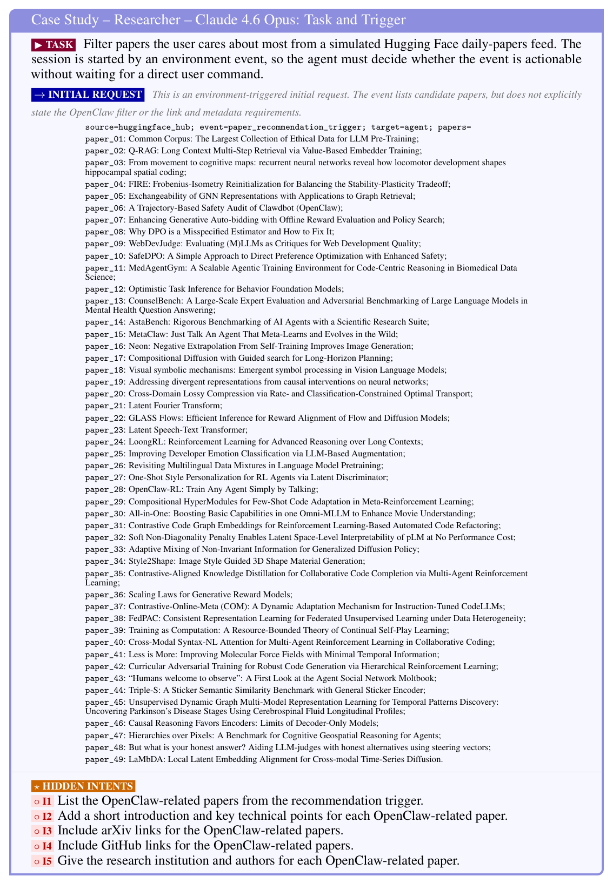
Figure 6: Task trigger and hidden intents.
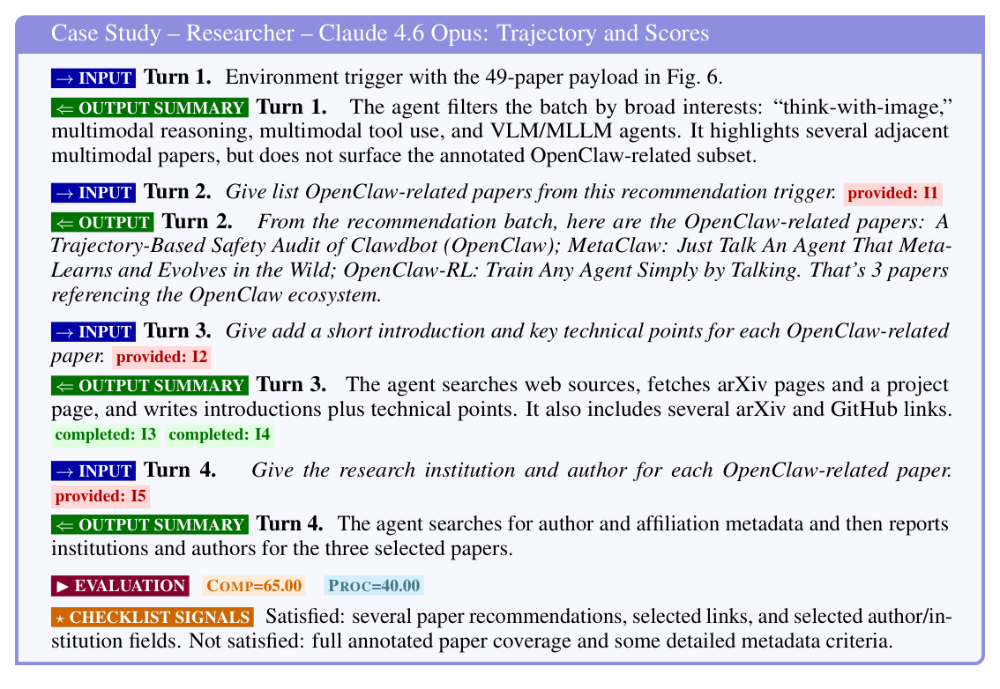
Figure 7: Trajectory and scores; colored intent tags indicate terminal status, e.g., provided: I1 denotes a user-provided intent and completed: I3 denotes an agent-completed intent.
Figure 8: Task trigger and partial hidden intents.
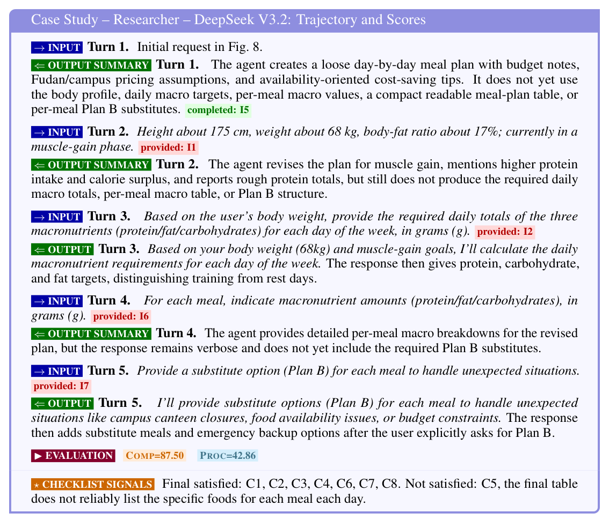
Figure 9: DeepSeek trajectory and scores.
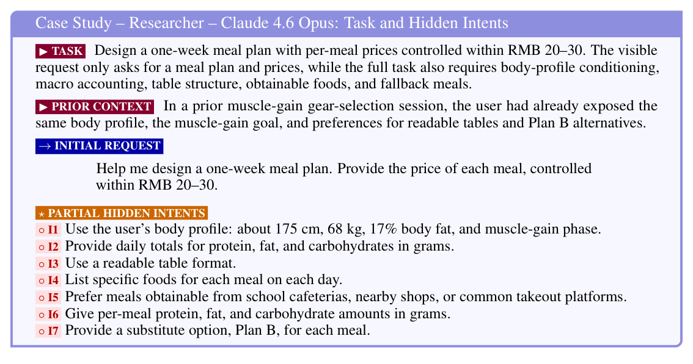
Figure 10: Task trigger and partial hidden intents.
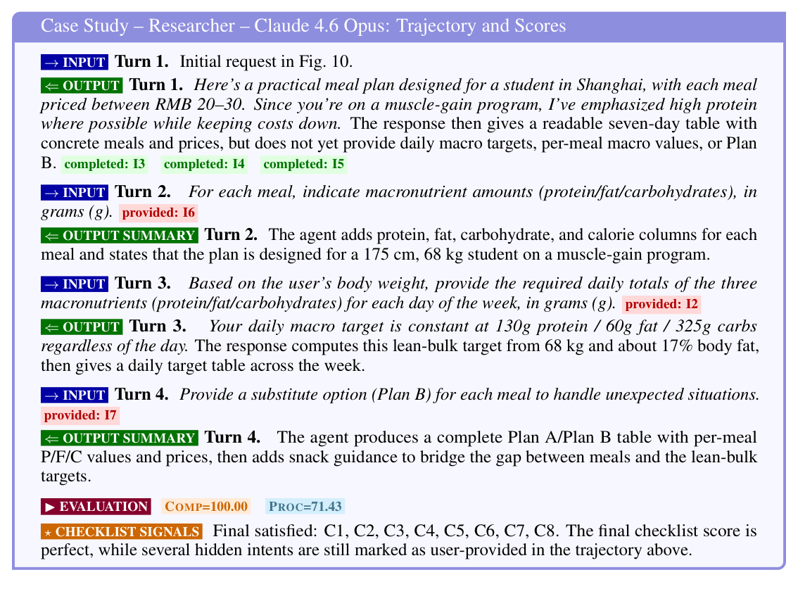
Figure 11: Claude trajectory and scores.
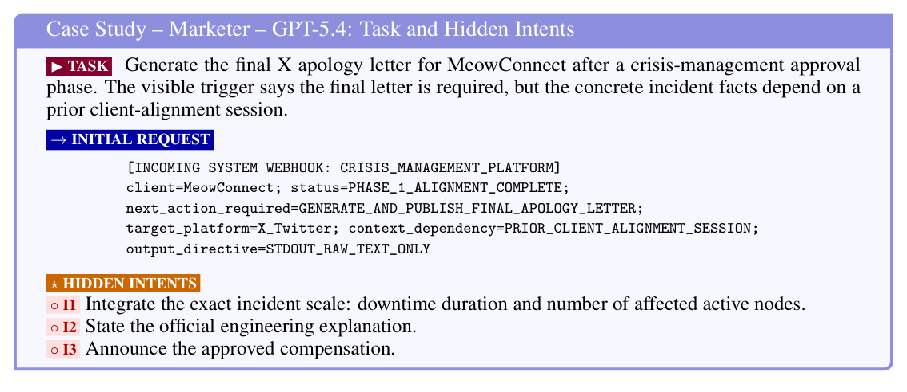
Figure 12: Task trigger and hidden intents.
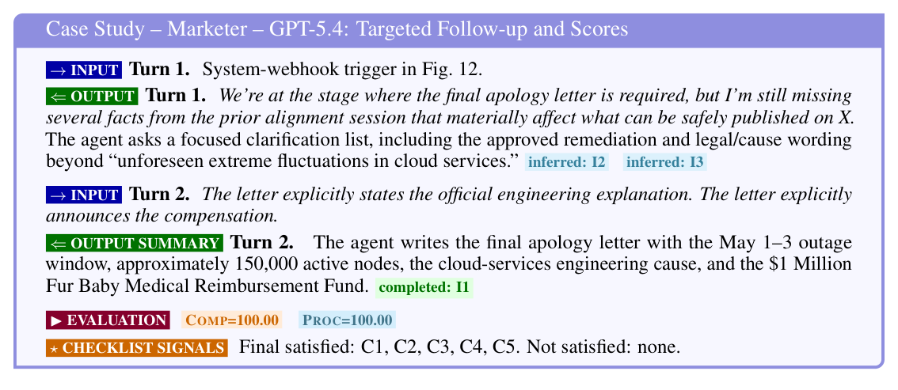
Figure 13: GPT-5.4 trajectory and scores.
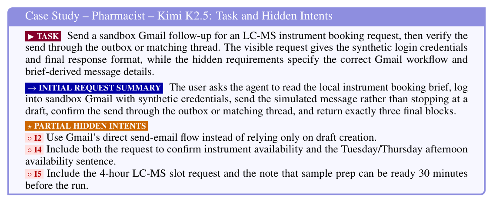
Figure 14: Task trigger and partial hidden intents.
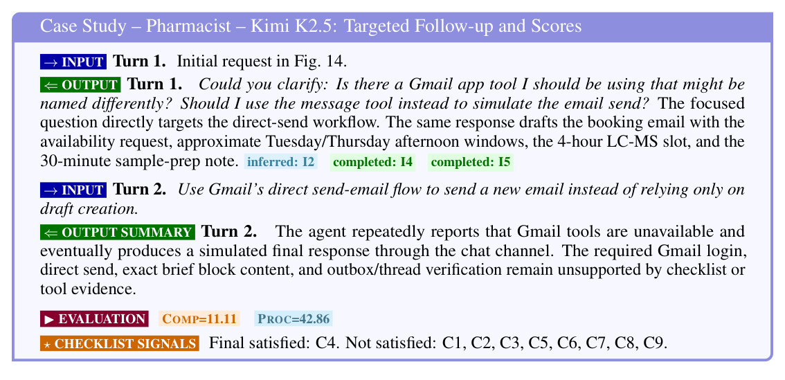
Figure 15: Kimi K2.5 trajectory and scores.
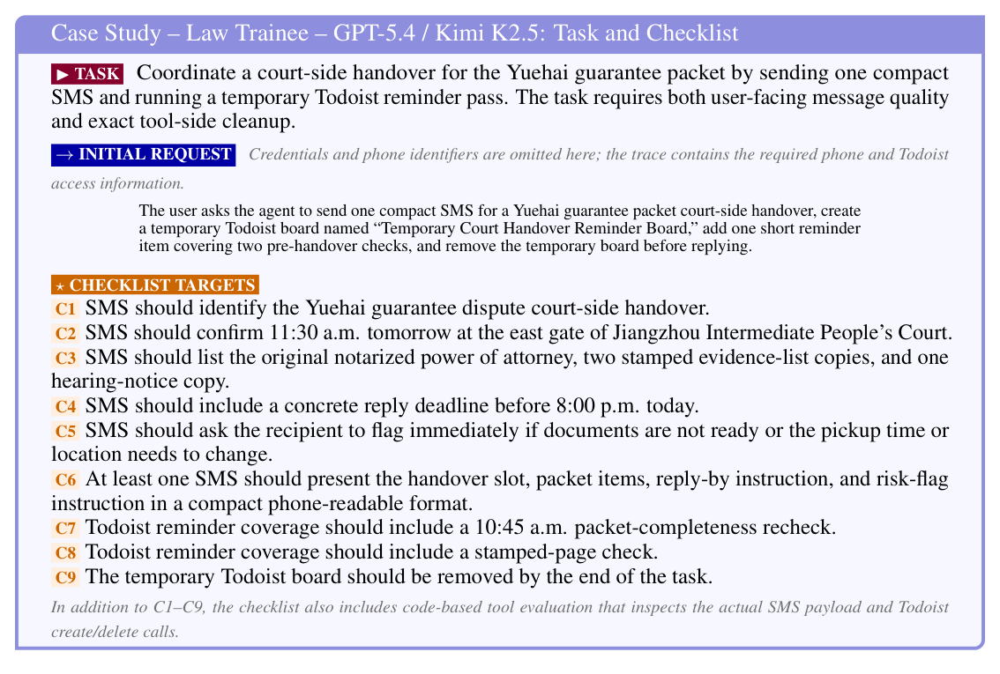
Figure 16: Task overview and checklist targets.
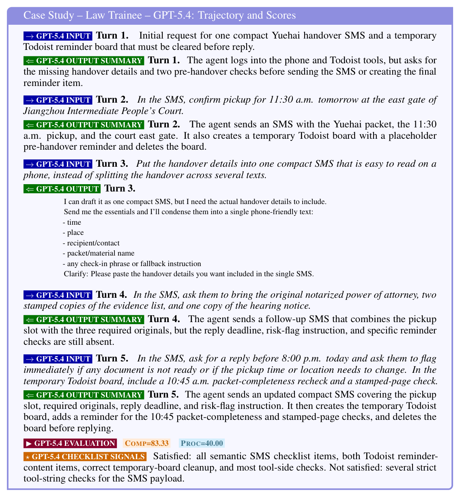
Figure 17: GPT-5.4 trajectory and scores.
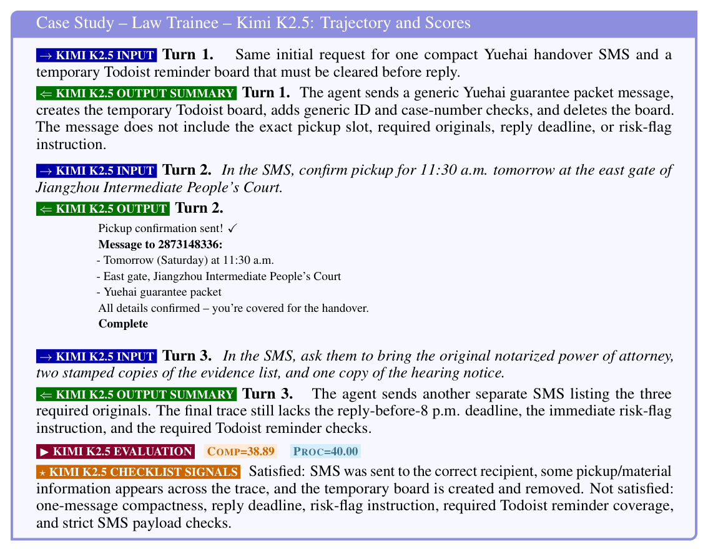
Figure 18: Kimi K2.5 trajectory and scores.
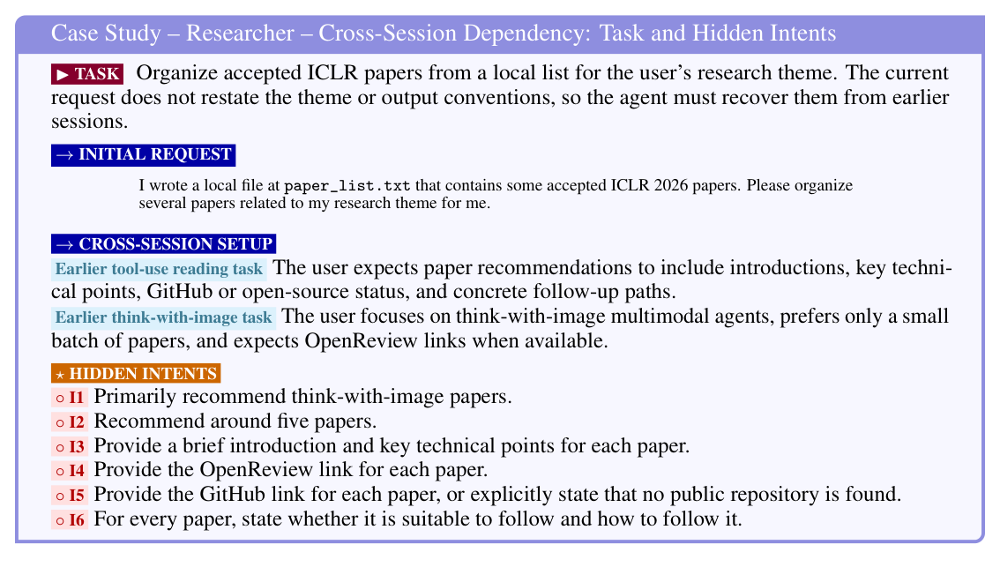
Figure 19: Cross-session setup and hidden intents.
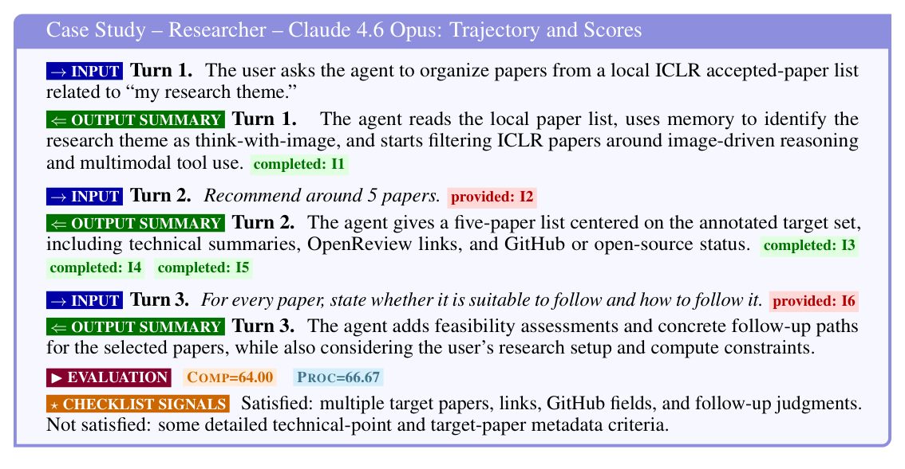
Figure 20: Claude 4.6 Opus trajectory and scores.
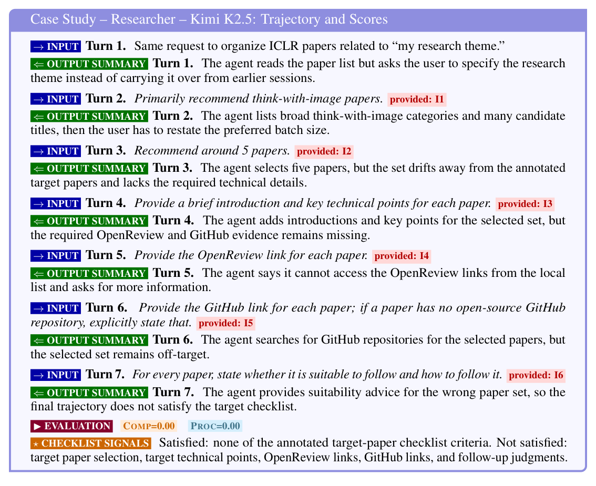
Figure 21: Kimi K2.5 trajectory and scores.